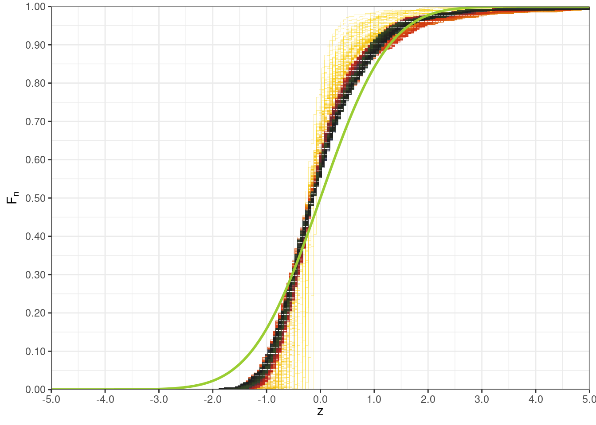
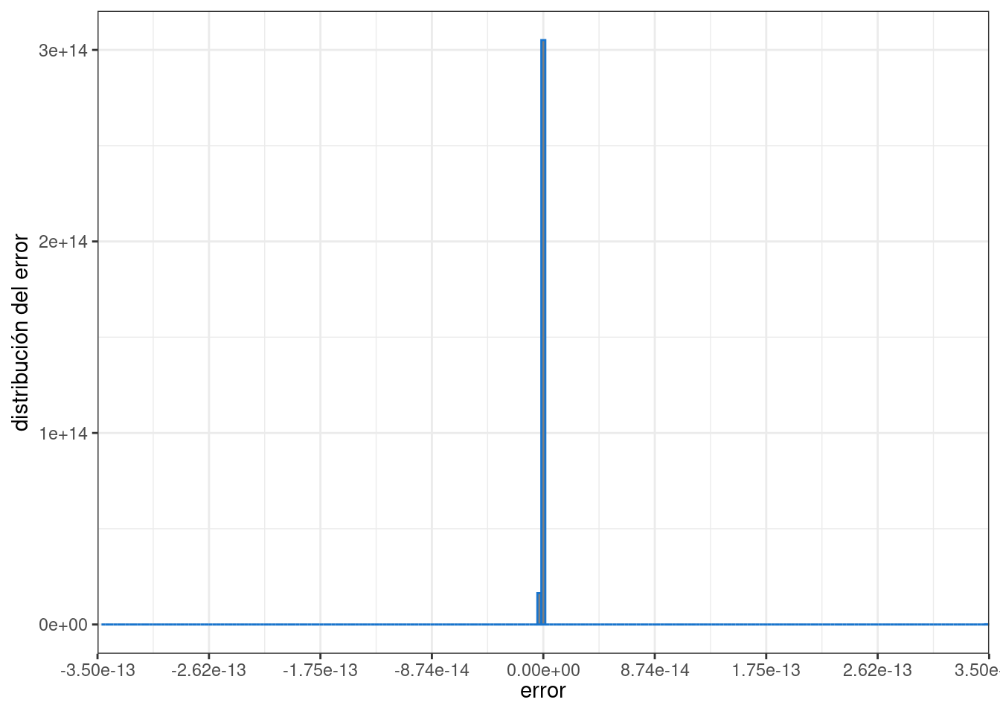

Antes de introducir algunos conceptos necesarios para nuestro estudio, necesitamos de algunos conceptos de base.
5.1 Probabilidad y conceptos asociados
Empezamos con algunas definiciones que serán de utilidad siempre a lo largo de toda esta exposición. Son ideas fundamentales que se utilizan continuamente en la elaboración de diferentes modelos actuariales y en general estadísticos.
En breves términos, utilizaremos los siguientes conceptos
Un fenómeno es un hecho que puede ser observado.
Un fenómeno estocástico es un fenómeno sobre el que se realiza un experimento que puede arrojar más de un resultado posible.
Un experimento es la observación de un fenómeno bajo condiciones específicas.
Un resultado es la información obtenida de un experimento.
En relación a lo anterior, también tenemos estas definiciones ya más formales.
El conjunto de todos los resultados lo denominamos espacio muestral y usualmente lo notamos por \(\Omega\).
Un evento es un conjunto de uno o más resultados posibles. En pocas palabras un evento \(A\) es un subcojunto de \(\Omega\), i.e. \(A \subset \Omega\).
En algunas ocasiones, para dar mayor precisión a la naturaleza de los eventos, si este está asociado a un fenómeno estocástico se denomina evento contingente.
No todos los subconjuntos de \(\Omega\) necesariamente son un evento, usualmente hay subconjuntos que no pueden resultar de un experimento. Así, si agrupamos todos los eventos usualmente tenemos un conjunto menor a las partes \(\mathcal{P}(\Omega)\) de \(\Omega\). El conjunto de todos los eventos se conoce como una álgebra de eventos, \(\sigma\)-álgebra o tribu. Usualmente se la nota por \(\F\), es claro que \(\F \subset \mathcal{P}(\Omega)\).
El álgebra de eventos, se denomina así, ya que usualmente es cerrada para algunas operaciones de conjuntos. Tiene las siguientes propiedades:
Todos los resultados de espacio muestral están en \(\F\), es decir \(\Omega \in \F\)
El complemento de un evento también es parte de \(\F\), es decir si \(A \in \F\), entonces \(A^c = \Omega \setminus A \in \F\).
La unión de eventos es un evento, si \(A, B \in \F\), entonces \(A \cup B \in \F\),
Aunque redunde, la intersección de eventos es un evento, si \(A, B \in \F\), entonces \(A \cap B \in \F\).
La probabilidad es una medida de las posibilidades de que ocurra un evento contingente que toma valores en \([0,1]\). Formalmente, la probabilidad se la define como una medida, esto es una función de conjuntos \[
P: \F \longrightarrow [0,1]
\] sobre los eventos \(\F \subset \mathcal{P}( \Omega )\) del espacio muestral \(\Omega\).
Si \(A, B \in \F\) son disjuntos \(A \cap B = \emptyset\), entonces \(P( A \cup B ) = P( A ) + P( B )\)
\(P( \Omega ) = 1\)
\(P( \emptyset ) = 0\)
Muchas propiedades en la teoría de probabilidades se cumplen en un sentido más débil, bajo la consideración de la medida de probabilidad \(P\) salvo cualquier conjunto de medida nula. Esto se debe que a que existen eventos en un experimento que tienen probabilidad nula de presentarse.
Una propiedad sobre sobre \(\Omega\) viene caracterizada por una función de verificación \(V : \Omega \longrightarrow \{0,1\}\) de tal forma, se dice que un evento \(A \in \F\) satisface la propiedad dada por \(V\) si \(V(\omega) = 1\), para todo \(\omega \in A\). Entonces decimos que se satisface la propiedad en \(V\) en casi en todas partes o casi seguramente si para todo evento \(N \in \F\) que no satisfaga \(V\) mantiene una medida nula, es decir \(P( N ) = 0\) y para cualquier \(\omega \in \Omega \setminus N\) se satisface \(V\), \(V( \omega ) = 1\). En otras palabras en ciertos experimentos hay resultados que se pueden presentar, están dentro de las opciones, sin embargo en caso de presentarse no hay forma que se pueda medirlos.
En muchas ocasiones se observa los resultados a través de la realización de un experimento, y es usual que a cada experimente se le asocie un único resultado. Esta noción permite la definición de una variable aleatoria.
Una variable aleatoria es una función que asigna un valor numérico a todo evento contingente.
Una variable aleatoria \(X: \Omega \longrightarrow D\) que parte del espacio muestral \(\Omega\) y toma valores en el conjunto de los números reales \(\R\). Como la variable aleatoria es el resultado de un experimento, el cual debe ser medible, es natural esperar que todo intervalo observado sea el resultado de un evento en el espacio muestra \(\Omega\). De forma más clara, la imagen recíproca de un cualquier intervalo \(A \subset \R\) es un evento en \(\F\), i.e. \(X^{-1}( A ) \in \F\) esto precisamente se designa como una función medible.
De \(X\) se puede construir o heredar otra medida a partir de \(P\), esta se representa \(P_X\) y tan solo mide los eventos que son imagen de \(X\). Es decir para cualquier intervalo \(A \in \R\)\[
\begin{split}
P_X( A )
& = P( X^{-1}( A ) )\qquad \text{definición de la notación} \\
& = P(\{ \omega \in \Omega \mid X( \omega ) \in A \})\qquad \text{definición de imagen recíproca} \\
& = \int\limits_{X^{-1}( A )} dP( \omega )\qquad \text{representación en forma integral}
\end{split}
\] a partir de la medida \(P_X\) precisamente se puede determinar algunas funciones que se conocen como distribuciones o densidades de probabilidad.
De la idea de variable aleatoria a valores reales se puede extender fácilmente al caso de varias variables aleatorias, un vector aleatorio que toma valores en \(\R^n\), i.e. una función medible \(X : \Omega \longrightarrow \R^n\).
Una variable aleatoria \(K: \Omega \longrightarrow D\) que parte del espacio muestral \(\Omega\) y toma valores en un conjunto discreto \(D = \left\{k_i \in \R | i \in \mathbb{N} \right\}\), sigue una probabilidad discreta dada por las probabilidades \(p_i \in [0,1]\) , \(i \in \mathbb{N}\), si \[
P\left( K = k_i \right) = p_i,\qquad \forall i \in \mathbb{N}
\] Además se cumple la condición de normalización que es muy importante. \[
\sum\limits_{i = 0}^{\infty} p_i = 1
\] las probabilidades ¡Nunca son negativas! y !Suman siempre 1!.
Consideramos una variable aleatoria a valores reales \(X\), la función de distribución acumulada\(F\) asociada a la variable aleatoria \(X\), está dada por la siguiente relación: \[
F( x )
= P( X \leq x )
= P_X( (-\infty, x] )
= P( X \in (-\infty, x] )
= P\left( X^{-1}\left( (-\infty, x ] \right) \right)
\]
La función de distribución acumulada, tiene las siguientes propiedades:
Para cualquier \(x \in \R\), \(0 \leq F( x ) \leq 1\),
La función \(F\) es no decreciente,
La función \(F\) es continua por derecha,
Se satisfacen los siguientes límites:
\[
\underset{x \rightarrow -\infty}{\lim} F( x ) = 0\qquad
\underset{x \rightarrow +\infty}{\lim} F( x ) = 1
\]
La función \(F\) es a variación acotada [1]. Esto quiere decir que existe un real \(C > 0\), para cualquier partición \(\{x_i\}_{i\in\Z}\), tal que:
Cuando se trata de un variable aleatoria con varias componentes reales \(X = ( X_1, \ldots, X_n )\), o lo que es lo mismo una secuencia finita de varias variables aleatorias a valores reales. Se puede extender la definición de distribución acumulada para la variable \(X\), si consideramos valores reales \(x = ( x_1, \ldots, x_n ) \in \R^n\), así definimos la forma más general de la distribución acumulada a varias variables. \[
F\left( x_1, \ldots, x_n \right)
= P\left( X_1 \leq x_1 \land \cdots \land X_n \leq x_n \right)
= P\left( \bigcap_{i=1}^n X_i^{-1}\left( (-\infty, x_i ] \right) \right)
\] Es decir, \(F\) es tan solo la probabilidad de la intersección de los eventos de la forma \(X_i^{-1}\left( (-\infty, x_i ] \right)\).
La función de supervivencia\(S : \R \longrightarrow \R\) está asociada a una variable aleatoria \(X\), está dada por la siguiente: \[
S( x ) = 1 - F( x ) = 1 - P( X \leq x ) = P( X > x )
\]
Hay un caso bastante conocido, el mismo es el más presentado en el curso introductorio de teoría de probabilidades, precisamente se hace uso del teorema fundamental del cálculo para poder establecer la siguiente definición.
La densidad de probabilidad o también la ley de probabilidad de una variable aleatoria a valores reales \(X\), es una función \(f: \R \longrightarrow \R\), tal que \[
P( a \leq X \leq b ) = F( b ) - F( a ) = \int\limits_a^b f( x )\ dx
\]
Así se satisface la siguiente igualdad \[
F( x )
= \int\limits_{(-\infty,x]} f( x )\ dx
= \int\limits_{-\infty}^x f( x )\ dx
\]
Esto implica que \(f\) es la derivada de \(F\), i.e. \(\frac{dF}{dx} = f\), por tal razón \(f\) estará bien definida siempre y cuando la derivada de \(F\) esté bien definida.
El siguiente ejemplo muestra una forma típica de una distribución acumulada continua. En este caso la distribución acumulada de la normal estándar, la cual no admite una forma analítica. \[
\Phi( x ) = \frac{1}{\sqrt{2\pi}} \int\limits_{-\infty}^x \exp\left( -\frac{u^2}{2} \right)\ du
\]
Dos variables aleatorias a valores reales \(X\) y \(Y\), se dicen independientes si para cualquier par de eventos \(A\) y \(B\), sucede la siguiente factorización de probabilidades \[
P( X \in A \land Y \in B ) = P( X \in A ) P( Y \in B)
\]
La propiedad anterior, en particular para la función de distribución conjunta, toma la siguiente forma: \[
F_{X,Y}( x, y ) = P( X \leq x \land Y \leq y )
= P( X \leq x ) P( Y \leq y )
= F_{X}( x ) F_{Y}( y )
\]
Para cuando tratamos con dos variables aleatorias \(X\) y \(Y\), si en caso existe y está bien definida las derivadas hasta el segundo orden de la función de distribución acumulada conjunta \(F_{X,Y}\). En tal caso se puede definir la respectiva densidad de probabilidad \[
f_{X,Y}( x, y ) = \frac{\D^2 F_{X,Y}}{\D x \D y}( x, y )
\]
Así mismo, para la densidad de probabilidad conjunta, si en caso las variables aleatoria \(X\) y \(Y\) son independientes, también se puede factorar la densidad de probabilidad. \[
f_{X,Y}( x, y ) = f_X( x ) f_Y( y )
\]
En el desarrollo a continuación haremos bastante uso de familias de variables aleatorias \(X_1, \ldots, X_n\) las cuales muchas de las veces se consideraran que son independientes entre si e idénticamente distribuidas, es usual designarlas con las siglas i.i.d.. Esta situación si las \(X_1, \ldots, X_n\) siguen la misma distribución, su distribución conjunta tiene la siguiente forma: \[
\begin{split}
F( x_1, \ldots, x_n )
& = P( X_1 \leq x_1 \land \cdots \land X_n \leq x_n ), \qquad \text{por definición} \\
& = \prod\limits_{i=1}^n P( X_i \leq x_i ),\qquad \text{si las variables $X_i$ son independientes} \\
& = \prod\limits_{i=1}^n F_{X_i}( x_i ) \\
& = \prod\limits_{i=1}^n F_{X}( x_i ), \qquad \text{si las variables $X_i$ son idénticamente distribuidas}
\end{split}
\]
La siguiente función es utilidad para comprender algunos resultados en teoría de probabilidades. También, es bastante útil para realizar de forma más clara y rápida algunos cálculos.
La función indicatriz de un conjunto \(A \subset \Omega\), es la función \(\mathbf{1}_A : \Omega \longrightarrow \{0,1\}\), que toma los valores \(\mathbf{1}_A( \omega ) = 0\), si \(\omega \notin A\) y \(\mathbf{1}_A( \omega ) = 1\), si \(\omega \in A\).
Además esta función indicatriz tiene las siguientes propiedades
Si \(A, B \subset \Omega\), entonces \(\mathbf{1}_{A \cap B} = \mathbf{1}_A \mathbf{1}_B\)
Si \(A \subset \Omega\), entonces \(\mathbf{1}_{A^c} = 1 - \mathbf{1}_A\)
Si \(A, B \subset \Omega\), entonces \(\mathbf{1}_{A\cup B} = \mathbf{1}_A + \mathbf{1}_B - \mathbf{1}_A \mathbf{1}_B\)
\(\mathbf{1}_\Omega = 1\)
Hay un caso atípico que suele ser útil, esto sucede cuando la variable aleatoria \(X : \Omega \longrightarrow \R\), es constante, quiere decir que tenemos un \(a \in \R\), tal que \(X( \omega ) = a\) para todo \(\omega \in \Omega\). En este caso la distribución de probabilidad acumulada \(F\) de \(X\), tiene la siguiente forma particular. \[
F( x ) = P( X \leq x ) = \mathbf{1}_{[a, +\infty)}( x )
\]
Las constantes o variables aleatorias constantes son independientes de cualquier otra variable aleatoria.
Proof. Consideremos \(X\) una constante o variable aleatoria constante, tal que existe un \(a \in \R\), tal que \(X( \omega ) = a\) para cualquier \(\omega \in \Omega\) y \(Y\) una variable aleatoria cualquiera a valores reales. Para cualesquier intervalos \(A, B \subset \R\). Entonces tenemos dos casos, primero \(X \notin A\), entonces \(\emptyset = \{ \omega \in \Omega \mid X( \omega ) \in A \}\), por otra parte si \(y \in A\), entonces \(\Omega = \{ \omega \in \Omega \mid X( \omega ) \in A \}\), como consecuencia \[
P( X \in A ) = P\left( X^{-1}(A) \right)
= P\left( \{ \omega \in \Omega \mid X( \omega ) \in A \} \right)
= \mathbf{1}_{A}( a )
\]
Ahora consideramos los casos anteriores para la probabilidad conjunta, primero el caso \(X \notin A\)\[
\begin{split}
P\left( X \in A \land Y \in B \right)
& = P\left( X^{-1}(A) \cap Y^{-1}(B) \right) \\
& = P\left( \left\{ \omega \in \Omega \middle| X( \omega ) \in A \right\} \cap
\left\{ \omega \in \Omega \middle| Y( \omega ) \in B \right\} \right) \\
& = P\left( \emptyset \cap \left\{ \omega \in \Omega \middle| Y( \omega ) \in B \right\} \right) \\
& = P( \emptyset ) \\
& = 0
\end{split}
\]
El segundo caso \(X \in A\)\[
\begin{split}
P\left( X \in A \land Y \in B \right)
& = P\left( X^{-1}(A) \cap Y^{-1}(B) \right) \\
& = P\left( \left\{ \omega \in \Omega \middle| X( \omega ) \in A \right\} \cap
\left\{ \omega \in \Omega \middle| Y( \omega ) \in B \right\} \right) \\
& = P\left( \Omega \cap \left\{ \omega \in \Omega \middle| Y( \omega ) \in B \right\} \right) \\
& = P( Y \in B )
\end{split}
\]
Esto quiere decir en conclusión que \[
P( X \in A \land Y \in B ) = \mathbf{1}_{A}( a ) P( Y \in B ) = P( X \in A ) P( Y \in B )
\] por tanto \(X\) y \(Y\) son independientes
A partir de una muestra de \(X_1, \ldots, X_n\) de una variable aleatoria \(X\), podemos definir también la medida de probabilidad empírica asociada a la muestra \(X_1, \ldots, X_n\). Así para cualquier evento del espacio muestral \(\Omega\), \(A \subset \Omega\)\[
P_n( B ) = \frac{1}{n} \sum\limits_{i=1}^n \mathbf{1}_{B}\left( X_i \right)
\]
A partir de la medida empírica de probabilidad, podemos extraer la de para la distribución acumulada empírica\(F_n\), para ello consideremos eventos de la forma \((-\infty,x]\) para cualquier \(x \in \R\). \[
F_n( x ) = P_n( (-\infty,x])
= \frac{1}{n} \sum\limits_{i=1}^n \mathbf{1}_{(-\infty,x]}\left( X_i \right)
\]
Para muchos resultados asociados a la estimación de estadística la variantes empíricas \(P_n\) y \(F_n\) serán de mucha de utilidad.
Considerando una variable aleatoria discreta \(K : \Omega \longrightarrow D \subset \R\), donde \(D\) es un conjunto discreto, es decir sus elementos se pueden contar y poner en correspondencia con \(\mathbb{N}\). Entonces, la esperanza se define como: \[
\E[ K ]
= \E_P[ K ]
= \sum\limits_{i=0}^{\infty} k_i P\left( K = k_i \right)
= \sum\limits_{i=0}^{\infty} k_i p_i
\]
Para el caso de una variable aleatoria a valores reales, es decir una función medible \(X : \Omega \longrightarrow \R\), la esperanza matemática está dada por \[
\E[ X ]
= \E_P[ K ]
= \int\limits_{\mathbb{\Omega}} X( \omega )\ dP( \omega )
= \int\limits_{\R} x\ dF( x )
\] donde la última integral de tipo Riemann-Stieltjes tiene sentido, ya que \(F\) es una función de variación acotada [1].
Cuando la función de densidad de probabilidad está bien definida es posible expresar y calcular la esperanza matemática como la siguiente expresión: \[
\E[ X ]
= \int\limits_{\R} x f( x )\ dx
\]
La esperanza matemática goza de las siguientes propiedades:
Linealidad, \(a \in \R\)\[
\E[ aX + Y ] = a \E[ X ] + \E[ Y ]
\]
Monotonía, si \(X \leq Y\), entonces \[
\E[X] \leq \E[Y]
\]
La esperanza de una constante \(a \in \R\) es la misma constante. \[
\E[a] = \int\limits_{\R} a\ dF_X( x ) = a\int\limits_{\R} dF_X( x ) = a
\]
De esto resulta que la esperanza jamás puede ser mayor que cualquiera de los valores que toma la variable aleatoria \(X\).
La función indicatriz \(\mathbf{1}_A\) sobre un evento \(A\) del espacio muestral \(\Omega\), también se puede interpretar como una variable aleatoria, que tan solo tomo los valores \(0\) o \(1\). Es más, su esperanza es precisamente la probabilidad del evento \(A\). \[
\E\left[ \mathbf{1}_A \right]
= \int\limits_\Omega \mathbf{1}_A( \omega )\ dP( \omega )
= \int\limits_A dP( \omega )
= P( A )
\] Con esta propiedad, podemos obtener la siguiente representación para la función de distribución acumulada de una variable aleatoria a valores reales \(X\). \[
F( X \leq x )
= P( X \leq x )
= \E\left[ \mathbf{1}_{(-\infty,x]}( X ) \right]
\]
La función generadora de momentos de una variable aleatoria a valores reales \(X\), es la función: \[
M_X( t ) = \E\left[ \exp( t X ) \right]
\]
Si \(X_1, \ldots, X_n\) son variables aleatorias y \(Y = X_1 + \cdots + X_n\), entonces \[
\begin{split}
M_Y( t )
& = \E\left[ \exp\left( t Y \right) \right] \\
& = \E\left[ \exp\left( t \sum\limits_{i=1}^n X_i \right) \right] \\
& = \prod\limits_{i=1}^n \E\left[ \exp\left( t X_i \right) \right],\qquad
\text{si las variables $X_i$ son independientes} \\
& = \left( \E\left[ \exp\left( t X \right) \right] \right)^n,\qquad
\text{si las variables $X_i$ son identicamente distribuidas} \\
& = \left( M_X( t ) \right)^n
\end{split}
\]
La función característica de una variable aleatoria a valores reales \(X\), es la función: \[
\varphi_X( t ) = M_X( it ) = \E\left[ \exp( i t X ) \right]
\]
Precisamente se conoce a \(\varphi_X\) como función característica de una variable aleatoria \(X\), debido al siguiente resultado.
Sea \(\varphi\) la función característica de la distribución de probabilidad \(F\) de una variable aleatoria \(X\). Si \(x,y \in \R\) son dos puntos de continuidad de la distribución \(F\), entonces: \[
F( y ) - F( x ) = \frac{1}{2\pi} \underset{c \rightarrow +\infty}{\lim} \int\limits_{-c}^c
\frac{\exp(-itx) - \exp(-ity)}{it} \varphi( t )\ dt
\]
Con el resultado anterior sabemos que si conocemos de alguna manera la función característica \(\varphi_X\) de una variable aleatoria \(X\), entonces podemos aproximar su distribución acumulada con una evaluación numérica de la integral anterior.
Para el estudio de los variaciones que puede presentar una variable aleatoria \(X\) se puede considerar otra medida de tendencia la cual precisamente está enfocada a medir cuanto se aleja de la media una variable aleatoria \(X\). Esta medida, en las aplicaciones financieras está fuertemente asociada a lo que se conoce como volatilidad.
Así mismo su varianza es la dada por: \[
\V[ X ]
= \E\left[ \left( X - \E[ X ] \right)^2 \right]
= \E\left[ X^2 \right] - \E\left[ X \right]^2
\]
La covarianza de dos variables aleatorias, está dada por la siguiente expresión: \[
\mathbb{C}[ X, Y ]
= \E\left[ \left( X - \E[ X ] \right)\left( Y - \E[ Y ] \right) \right]
= \E\left[ X Y \right] - \E\left[ X \right]\E\left[ Y \right]
\]
De forma integral esta se la puede expresar como: \[
\begin{split}
\mathbb{C}[ X, Y ]
& = \int\limits_{\R^2} xy\ dP( x, y )
- \int\limits_{\R^2} x\ dP( x, y )\int\limits_{\R^2} y\ dP( x, y ) \\
& = \int\limits_{\R^2} xy f_{X,Y}( x, y )\ dx dy
- \int\limits_{\R^2} x f_{X,Y}( x, y )\ dx dy\int\limits_{\R^2} y f_{X,Y}( x, y )\ dx dy
\end{split}
\]
No está por demás notar que \(\mathbb{C}[ X, X ] = \V[ X ]\)
En más de una ocasión se tendrá la necesidad de agregar variables aleatorias, sumarlas entre si, en este caso se tiene la necesidad de determinar su distribución acumulada en función de las distribuciones acumuladas que se consideraron en la suma.
Dadas dos variables aleatorias a valores reales \(X\) y \(Y\), con funciones de distribución acumulada \(F_X\) y \(F_Y\) respectivamente, la distribución acumulada \(F_Z\) de la variable aleatoria \(Z = X + Y\) está dada por la siguiente expresión: \[
F_Z( z )
= P( Z \leq z )
= F_X \star F_Y ( z )
= \int\limits_{\R} F_X( x - y )dF_Y( y )
\]
si en caso se puede definir las densidades de probabilidad \(f_X\) y \(f_Y\) para las variables aleatorias \(X\) y \(Y\), entonces: \[
f_Z( z ) = f_X \star f_Y ( z )
= \int\limits_{\R} f_X( x - y ) f_Y( y )\ dy
\]
El producto \(\star\) se conoce como convolución de funciones, el mismo es simétrico.
Para cuando se realiza la convolución de varias veces la misma función, se opta por una notación más compacta \(f^{\star k}\), para el producto de convolución \(k\)-veces la misma función \(f \star f \star \cdots \star f\).
Cuando se tiene dos variables aleatorias independientes \(X\) y \(Y\), muchas de las veces nos interesamos a trabajar con la variable aleatoria dada por el mínimo entre estas variables, i.e. \(Z = \min( X, Y )\). De ello surge la necesidad de determinar la distribución de probabilidad acumulada \(F_Z\) de \(Z\), a partir de las distribuciones de \(F_X\) de \(X\) y \(F_Y\) de \(Y\). \[
\begin{split}
F_Z( z )
& = P( Z \leq z ) \\
& = 1 - P( Z > z ) \\
& = 1 - P( \min(X,Y) > z ) \\
& = 1 - P( X > z \land Y > z ) \\
& = 1 - P( X > z ) P( Y > z ) \\
& = 1 - \left( 1 - F_X( z ) \right) \left( 1 - F_Y( z ) \right) \\
& = F_X( z ) + F_Y( z ) - F_X( z ) F_Y( z )
\end{split}
\]
En particular cuando \(Y = a\) es constante tenemos la siguiente distribución de probabilidad para \(Z = \min( X, Y ) = \min( X, a )\)\[
F_Z( z ) = F_X( z ) + \mathbf{1}_{[a,+\infty)}( z ) - \mathbf{1}_{[a,+\infty)}( z ) F_X( z )
= \mathbf{1}_{(-\infty,a)}( z ) F_X( z ) + \mathbf{1}_{[a,+\infty)}( z )
\] Esta función tiene las siguientes propiedades.
si \(z > a\), entonces \(F_Z( z ) = 1\)
si \(z < a\), entonces \(F_Z( z ) = F_X( z )\)
si \(z = a\), entonces \(F_Z( a ) = 1\)
la función \(F\) es discontinua en \(a\)\[
\underset{z \nearrow a}{\lim} F_Z( z ) = \underset{z \nearrow a}{\lim} F_X( z ) = F_X( a )
\] por otra parte \[
\underset{z \searrow a}{\lim} F_Z( z ) = \underset{z \searrow a}{\lim} \mathbf{1}_{[a,+\infty)}( z )
= \underset{z \searrow a}{\lim} 1 = 1
\] donde no necesariamente \(F_X( a )\) es igual \(1\).
el evento puntual \(\{Z = a\}\) no tiene necesariamente probabilidad nula, hay un fenómeno de concentración de la probabilidad en el punto \(a\). \[
\begin{split}
P( Z = a )
& = P\left( \min( X, a ) = a \right) \\
& = P\left( X \geq a \right) \\
& = 1 - F_X( a )
\end{split}
\]
De forma similar nos podemos también interesar a la variable aleatoria que expresa el máximo entre otras dos variables, i.e. \(Z = \max( X, Y )\), por un razonamiento similar podemos obtener la distribución de probabilidad \(F_Z\) de \(Z\). \[
\begin{split}
F_Z( z )
& = P( Z \leq z ) \\
& = P( \max(X,Y) \leq z ) \\
& = P( X \leq z \land Y \leq z ) \\
& = P( X \leq z ) P( Y \leq z ) \\
& = F_X( z ) F_Y( z )
\end{split}
\]
De forma análoga el caso cuando \(Y = a\) es una constante se reduce a la siguiente distribución de probabilidad para \(Z\). \[
F_Z( z ) = \mathbf{1}_{[a,+\infty)}( z ) F_X( z )
\]
5.2 Probabilidad condicional
En varias situaciones nos interesa estudiar la probabilidad de ciertos eventos dado que otro evento \(A \in \F\) ya se ha dado. Esto nos permite convertir al evento \(A\) en el nuevo espacio muestral y todos los experimentos se restringen al mismo.
Para cualquier par de eventos \(A, B \in \F\), la probabilidad condicional de \(A\) dado \(B\), está dada por: \[
P\left( B \middle| A \right) = \frac{P( A \cap B)}{P(A)}
\]
La medida condicionada \(P( \cdot | A )\) satisface todas las condiciones de una medida de probabilidad, y mide sobre los eventos de la forma \(A \cap B\), con \(B \in \F\). Es de notar que si \(A \cap B = \emptyset\), \(P( B | A ) = 0\).
Esta idea de probabilidad condicional se puede extender fácilmente a las funciones de distribución acumulada.
Si consideramos un evento cualquiera \(A \in \F\), \(X\) una variable aleatoria a valores reales y \(x \in \R\). Surge el interés de estudiar la distribución acumulada de \(X\) pero considerando dado que se produce el evento \(A\), esto resulta en estudiar: \[
P\left( X \leq x \middle| A \right)
= \frac{P(X \leq x \land A )}{P(A)}
= \frac{P( \{X \leq x \} \cap A )}{P(A)}
\] Esto precisamente da paso a la definición de la distribución acumulada de\(X\)condicionada a\(A\)\[
F( x | A ) = P\left( X \leq x \middle| A \right)
\]
Además, la distribución acumulada condicionada satisface algunas propiedades:
Si \(A, B \in \F\) son dos eventos disjuntos, entonces:
\[
\begin{split}
F\left( x \middle| A \cup B \right)
& = P\left( X \leq x \middle| A \right) \\
& = \frac{P\left( X \leq x \cap ( A \cup B ) \right)}{P\left( A \cup B \right)} \\
& = \frac{P\left( X \leq x \cap A \right) + P\left( X \leq x \cap B \right)}{P\left( A \cup B \right)} \\
& = \frac{P\left( X \leq x \cap A \right)P( A )}{P(A)P\left( A \cup B \right)}
+ \frac{P\left( X \leq x \cap B \right)P( B )}{P( B )P\left( A \cup B \right)} \\
& = P\left( X \leq x \middle| A \right) \frac{P( A )}{P\left( A \cup B \right)}
+ P\left( X \leq x \middle| B \right) \frac{P( B )}{P\left( A \cup B \right)} \\
& = P\left( X \leq x \middle| A \right) P\left( A \middle| A \cup B \right)
+ P\left( X \leq x \middle| B \right) P\left( B \middle| A \cup B \right) \\
& = F\left( x \middle| A \right) P\left( A \middle| A \cup B \right)
+ F\left( x \middle| B \right) P\left( B \middle| A \cup B \right)
\end{split}
\] 2. La distribución acumulada condicionada con respecto a todo el espacio muestral \(\Omega\), es la distribución acumulada.
\[
\begin{split}
F\left( x \middle| \Omega \right)
& = P\left( X \leq x \middle| \Omega \right) \\
& = \frac{P\left( X \leq x \cap \Omega \right)}{P(\Omega)} \\
& = \frac{P\left( X \leq x \right)}{P(\Omega)} \\
& = P\left( X \leq x \right) \\
& = F( x )
\end{split}
\]
Para cualquier \(A \in \F\), el evento \(\{ X \leq x \} \cap A \subset A\) y por tanto \(P\left( X \leq x \middle| A \right) \leq P( A )\), entonces \(0 \leq F(x | A) \leq 1\),
Para cualquier \(A \in \F\), la función de distribución acumulada condicionada \(F( \cdot | A )\) es no decreciente,
Para cualquier \(A \in \F\), la función de distribución acumulada condicionada \(F( \cdot | A )\) es continua por derecha,
En algunos casos la distribución acumulada de la variable aleatoria \(X\) se nota por \(F_X\) y la distribución acumulada de \(X\) condicionada por el evento \(A\), se nota por \(F_{X|A}\).
Como hemos visto la función de distribución acumulada satisface todas las propiedades de una función de distribución acumulada y por tal razón se puede calcular una esperanza, la cual vendrá condicionada.
Gracias a las propiedades 1 y 2 antes señaladas, tenemos fácilmente la siguiente igualdad para cualquier evento \(A \in \F\). \[
F( x )
= F\left( x \middle| \Omega \right)
= F\left( x \middle| A \cup A^c \right)
= F\left( x \middle| A \right) P( A ) + F\left( x \middle| A^c \right) P( A^c )
\] de donde surge la idea de generalizar la interpretación de la distribución acumulada de \(X\) condicionada por un evento \(A\). No solo puede ser interpretada como una función, sino como una variable aleatoria. Para ello, observemos que la distribución acumulada condicionada admite también la siguiente representación con el uso de la esperanza y las funciones indicatrices. \[
F\left( x \middle| A \right)
= \frac{P( X \leq x \land A )}{P( A )}
= \frac{\E\left[ \mathbf{1}_{(-\infty,x]}( X ) \mathbf{1}_{A} \right]}{\E\left[ \mathbf{1}_{A} \right]}
\] Esto sugiere la siguiente extensión de la distribución acumulada condicional a ser una variable aleatoria, ya no tan solo condicionada por eventos sino condicionada por variables aleatorias, en este primer caso por variables aleatorias de la forma \(\mathbf{1}_A\). Así damos sentido a la variable aleatoria \(F\left( x \middle| \mathbf{1}_A \right) : \Omega \longrightarrow \R_+\), para cualquier \(\omega \in \Omega\), definimos \[
F\left( x \middle| \mathbf{1}_A( \omega ) \right)
=
\left\{
\begin{array}{ll}
F\left( x \middle| A \right) & \text{si}\ \mathbf{1}_A( \omega ) = 1 \\
F\left( x \middle| A^c \right) & \text{si}\ \mathbf{1}_A( \omega ) = 0
\end{array}
\right.
\] de la definición anterior se sigue de forma inmediata la igualdad \[
\begin{split}
\E\left[ F\left( x \middle| \mathbf{1}_A \right) \right]
& = F\left( x \middle| A \right) P( A ) + F\left( x \middle| A^c \right) P( A^c ) \\
& = \frac{P\left( X \leq x \land A \right)}{P(A)} P( A )
+ \frac{P\left( X \leq x \land A^c \right)}{P(A^c)} P( A^c ) \\
& = P\left( X \leq x \land A \right) + P\left( X \leq x \land A^c \right) \\
& = P\left( X \leq x \right) \\
& = F( x )
\end{split}
\] Las variables aleatorias también generan eventos, ya que son medibles, por tal razón si tomamos en cuenta la definición anterior, podemos ciertamente extender la definición anterior de distribución acumulada condicionada, pero considerando variables aleatorias en su condicionamiento.
Así si consideramos dos variables aleatorias \(X\) y \(Y\) a valores reales, a partir de la definición podemos tranquilamente considerar la distribución acumulada de \(X\) condicionada al evento \(Y \leq y\)\[
F\left( x \middle| Y \leq y \right)
= \frac{P( X \leq x \land Y \leq y )}{P(Y \leq y)}
= \frac{F_{X,Y}( x, y )}{F_Y( y )}
\] está bien definida para \(F_Y( y ) \neq 0\)
Para una variable aleatoria \(X\) y un evento cualquiera \(A \in \F\), se define la esperanza condicionada respecto del evento \(A\), como: \[
\E\left[ X \middle| A \right]
= \E_{P|A}\left[ X \right]
= \E_P\left[ X \middle| A \right]
= \int\limits_{A} X( \omega )\ dP \left( \omega \middle| A \right)
= \int\limits_{\R} x\ dF\left( x \middle| A \right)
\] cuando \(F(x | A)\) es derivable, con densidad de probabilidad \(f(x|A)\), la esperanza condicionada también se puede escribir como: \[
\E\left[ X \middle| A \right]
= \int\limits_{\R} x\ f( x | A )\ dx
\] La distribución acumulada condicionada satisface las mismas propiedades de una distribución acumulada, y por tanto la esperanza que resulta de esta también satisface las mismas propiedades que cualquier esperanza.
Al igual que lo realizamos con la distribución acumulada condicionada, podemos reinterpretar a la esperanza condicionada como una variable aleatoria. \[
\E\left[ X \middle| \mathbf{1}_A \right]
= \int\limits_{\R} x\ dF\left( x \middle| \mathbf{1}_A \right)
\]
Por otra parte, para cualquier evento \(A \in \F\), las distribuciones \(F( \cdot ), F( \cdot | A )\) y \(F( x | A^c)\) son funciones de variación acotada y por tanto sus integrales de Riemann-Stieltjes están bien definidas [1], de donde resulta la siguiente igualdad. \[
\begin{split}
\E\left[ X \right]
& = \int\limits_{\R} x dF( x ) \\
& = \int\limits_{\R} x dF( x | A ) P( A ) + \int\limits_{\R} x dF( x | A^c ) P( A^c ) \\
& = \E\left[ X \middle| A \right] P( A ) + \E\left[ X \middle| A^c \right] P( A^c ) \\
& = \E\left[ \E\left[ X \middle| \mathbf{1}_A \right] \right]
\end{split}
\] por abuso de notación se suele utilizar la misma notación \(\E\left[ X \middle| A \right]\) para indicar también la variable aleatoria \(\E\left[ X \middle| \mathbf{1}_A \right]\). Así la siguiente expresión tienen sentido. \[
\E\left[ \E\left[ X \middle| A \right] \right]
= \E\left[ \E\left[ X \middle| \mathbf{1}_A \right] \right]
\]
La siguiente definición de distribución de exceso condicionada es útil para el estudio de los valores extremos que se pueden presentar en el estudio de los valores de siniestros que se presentan en un seguro.
La distribución de exceso condicionada asociada a una variable aleatoria \(X\) con distribución de probabilidad acumulada \(F\) y a un umbral de condicionamiento \(u > 0\), está dada por: \[
F_u( y ) = P\left( X - u \leq y \middle| X > u \right)
= \frac{P\left( u < X \leq y + u\right)}{P(X > u)}
= \frac{F( u + y ) - F( u )}{ 1 - F( u )}
\]
La varianza condicionada se puede definir de forma directa a partir de los anterior. Para una variable aleatoria a valores reales \(X\) y un evento \(A \in \F\). \[
\V[X|A] = \E[Y^2|A] - \E[Y|A]^2
\]
Consideremos dos variables aleatorias \(X, Y\), ambas a valores reales, entonces se satisface la siguiente igualdad: \[
\V[ Y ] = \E\left[ \V[ Y| X ] \right] + \V\left[ \E[ Y | X ] \right]
\]
Proof. \[
\begin{split}
\E\left[ \V[ Y| X ] \right]
& = \E\left[ \E[ Y^2 | X ] - \E[ Y | X ]^2 \right] \\
& = \E\left[ \E[ Y^2 | X ] \right] - \E\left[ \E[ Y | X ]^2 \right] \\
& = \E\left[ Y^2 \right] - \E\left[ \E[ Y | X ]^2 \right] + \E\left[ \E[ Y | X ] \right]^2
- \E\left[ \E[ Y | X ] \right]^2 \\
& = \E\left[ Y^2 \right] - \V\left[ \E[ Y | X ] \right] - \E\left[ Y \right]^2 \\
& = \V[ Y ] - \V\left[ \E[ Y | X ] \right]
\end{split}
\] Basta con ordenar los términos y se tiene la igualdad que buscamos.
Un caso de especial interés para estudiar algunos problemas actuariales se da cuando se dispone de dos variables aleatorias, \(N\) que toma solo valores discretos (numerables) los cuales pueden ser finitos como infinitos, por ejemplo: \(N\) toma valores en los números naturales \(\mathbb{N}\) y otra variable aleatoria \(X\) que toma valores continuos reales en \(\R\). La distribución conjunta puede generarse de la siguiente forma \[
\begin{split}
F( n, x )
& = P( N = n \land X \leq x ) \\
& = P\left( X \leq x \middle| N = n \right) P( N = n )\qquad \text{propiedades de la probabilidad condicional} \\
& = F( x | n ) p_n\qquad \text{simplificando notación} \\
\end{split}
\]
\(F( x | n )\) es la ley condicionada de \(X\) dado que \(N = n\) y \(p_n = P( N = n )\)
Además, es de notar que: \[
\begin{split}
F_X( x )
& = P( X \leq x ) \\
& = P( X \leq x \land N \in \mathbb{N} ) \\
& = P\left( X \leq x \land N \in \bigcup_{n \in \mathbb{N}} \{n\} \right) \\
& = P\left( \bigcup_{n \in \mathbb{N}} \left\{ X \leq x \land N \in \{n\} \right\} \right) \\
& = \sum\limits_{n \in \mathbb{N}} P\left( X \leq x \land N \in \{n\} \right) \\
& = \sum\limits_{n \in \mathbb{N}} P\left( X \leq x \land N = n \right) \\
& = \sum\limits_{n \in \mathbb{N}} P\left( X \leq x\ \middle|\ N = n \right) P( N = n ) \\
& = \sum\limits_{n \in \mathbb{N}} F( x | n ) p_n
\end{split}
\] la distribución de \(F_X\) de \(X\) no es más que una mixtura de las distribuciones condicionales de \(X\) para cada \(n \in \mathbb{N}\).
5.3 Resultados de convergencia
De las ramas de las Matemáticas la Estadística ciertamente es la más subestimada, en muchos casos menospreciada. Sin embargo, no sin mucha pretención, sino más bien honestidad, se puede decir que la Estadística es una de las ramas más complicadas de las Ciencias en general, ya que busca en muchos casos comprender, explicar y predecir fenómenos reales. En su fundamentación, al profundizar en ella, uno encontrará un sin número de conceptos, métodos y teorías con un amplio espectro de complejidad, que incluso se sustentan en ideas filosóficas bastante elaboradas y poco comprendidas.
No olvidar, la Estadística busca de frente y sin rodeos extraer conocimiento de la realidad y no hay algo más complejo y duro que la realidad misma.
Muchos de las herramientas de las estadística se resumen en algunas recetas o aplicaciones de software, sin embargo, no se debe olvidar que en muchos casos estas herramientas hacen uso de muchos métodos bastante avanzados y complejos en lo que respecta al conocimiento Matemático.
Consideramos la secuencia de variables aleatorias \(\{X_i\}_{i\in \mathbb{N}}\) las cuales consideraremos que son i.i.d. y con media común finita \(\E[X_i] = \mu < +\infty\). Entonces, se satisface el siguiente límite en probabilidad \[
\frac{1}{n} \sum\limits_{i=1}^n X_i \overset{p}{\rightarrow} \mu
\] esto quiere decir que para cualquier \(\varepsilon > 0\) se satisface el siguiente límite \[
\underset{n \rightarrow +\infty}{\lim} P\left( \left| \frac{1}{n}\sum\limits_{i=1}^n X_i - \mu \right| > \varepsilon\right) = 0
\]
El comportamiento de la suma de variables aleatorias, que posean además los dos primeros momentos finitos. Al estandarizar esta suma, la misma tiende a comportarse en el límite, conforme se incluye más términos, como una variable aleatoria con distribución normal. En muchos casos este método puede proveer una primera aproximación.
Consideramos las variables aleatorias \(X_1,\ldots,X_n\) i.i.d. con media común finita \(\E[X_i] = \mu < +\infty\) y varianza común finita \(\V[ X_i ] = \sigma^2 < +\infty\), para todo \(i \in \{1, \ldots, n \}\). Si consideramos la variable aleatoria de la suma total \(S_n = \sum\limits_{i=1}^n X_i\), entonces para la variable aleatoria estandarizada \[
\frac{S_n - \E[S_n]}{\V[ S_n ]} \overset{d}{\longrightarrow} Z
\] se tiene la convergencia en distribución, cuando \(n \rightarrow +\infty\), donde \(Z \rightsquigarrow N( 0, 1 )\). Más aún, de manera más clara la convergencia en distribución se puede expresar la convergencia puntual dada por el siguiente límite. \[
\underset{n \rightarrow +\infty}{\lim} P\left( \frac{S_n
- \E[S_n]}{\V[ S_n ]} \leq z \right)
= \Phi( z ), \qquad \forall z \in \R
\]
El teorema del límite central en su forma usual no proporciona una tasa de convergencia es decir, la variable aleatoria \(\frac{S_n - \E[S_n]}{\V[ S_n ]}\) tiende a tener un comportamiento de una variable aleatoria normal estándar conforme aumenta \(n\), pero no estamos seguros que tamaño debe tomar \(n\) para que esto se cumpla con una alta certeza. Para ello adicional al @ref(thm:tlc) se debe considerar otros resultados asociados a desigualdades de concentración.
El siguiente teorema también es gran ayuda y nos asegura la convergencia de la distribución acumulada empírica a la distribución acumulada teórica.
Consideramos las variables aleatorias \(\{X_n\}_{n\in\N}\) i.i.d., con función de distribución acumulada \(F\). Entonces, la distribución acumula empírica \(F_n\) generada a partir de las variables \(\{X_n\}_{n\in\N}\), converge en casi todo punto de forma uniforme a la distribución \(F\), más precisamente, para la norma de la convergencia uniforme \(\left\| F_n - F \right\|_{\infty} = \underset{x \in \R}{\sup} \left| F_n( x ) - F( x ) \right|\) tenemos la siguiente igualdad que precisamente expresa la convergencia en casi todo punto. \[
P\left( \underset{n \rightarrow +\infty}{\lim} \left\| F_n - F \right\|_{\infty} = 0 \right) = 1
\]
5.4 Desigualdades de concentración
Para muchos fines prácticos es importante encontrar una buena estimación de donde se encuentran concentrados los valores de una distribución de probabilidad, para ello existen varios resultados que caracterizan precisamente ello, estos se conocen como desigualdades de concentración.
Dada una variable aleatoria \(X\) con esperanza y varianza finitas \(\E[X] < +\infty\) y \(\V[X] < +\infty\), tenemos que se satisface la siguiente desigualdad para cualquier \(\varepsilon > 0\)\[
P\left( \left| X - \E[X] \right| > \varepsilon \sqrt{\V[ X ]} \right) < \frac{1}{\varepsilon^2}
\]
En la práctica la desigualdad de Chebyshev nos asegura que sin importar la variable aleatoria a valores reales, si tienen sus dos primeros momentos finitos, la probabilidad que la variable aleatoria \(X\) se aleje de su esperanza \(\E[X]\) en más de \(\varepsilon\) veces la desviación típica \(\sqrt{\V[ X ]}\) viene acotada por el término \(\frac{1}{\varepsilon^2}\) que decrece cuadráticamente en \(\varepsilon\). Entonces, por más pesada que sea la cola de la distribución de la variable aleatoria \(X\), a lo mucho decrecerá cuadráticamente.
Sean \(X_1, \ldots X_n\) variables aleatorias i.i.d., con media y varianza finitas, i.e \(\E[X] < +\infty\) y \(\V[X] < +\infty\) y además con tercer momento absoluto finito \(\E\left[\left|X - \E[X]\right|^3\right] < +\infty\). Entonces, para la variable aleatoria \[
U_n = \frac{S_n - \E[ S_n ]}{\sqrt{\V[ S_n ]}}
\] con \(S_n = \sum\limits_{i=1}^n X_i\). Se satisface la siguiente desigualdad de concentración con respecto a la distribución acumulada \(\Phi\) de la ley normal estándar. \[
\underset{u \in \R}{\sup}\left( 1 + |u|^3 \right)\left| P\left( U_n \leq u\right) - \Phi( u ) \right|
\leq \frac{C}{\sqrt{n}} \frac{\E\left[\left|X - \E[X]\right|^3\right]}{\sqrt{\V[X]}^3}
\] Con \(C = 0.7655+8( 1 + e ) > 0\) una constante universal, independiente de \(N\), \(X\) o \(S\).
El teorema del límite central @ref(thm:tlc) no proporciona un criterio para determinar cuan rápido se realiza la convergencia hacia la distribución normal. El resultado de la desigualdad anterior @ref(thm:beress) si proporciona un criterio de la convergencia eso sí, bajo la condición adicional de tener \(\E\left[\left|X - \E[X]\right|^3\right] < +\infty\). Como podemos observar la convergencia es sub-lineal, va en orden de la raíz cuadrada del número de términos \(n\).
Esto quiere decir que si deseamos un error de aproximación \(\varepsilon > 0\), requerimos que \[
\begin{split}
\frac{C}{\sqrt{n}} \frac{\E\left[\left|X - \E[X]\right|^3\right]}{\sqrt{\V[X]}^3}
& \leq \varepsilon \\
\frac{C^2}{\varepsilon^2} \frac{\E\left[\left|X - \E[X]\right|^3\right]^2}{\V[X]^3}
& \leq n
\end{split}
\] lo cual muestra que el número de variables aleatorias \(n\) crece en orden cuadrático inverso al error de aproximación deseado \(\varepsilon\).
Así mismo, el teorema @ref(thm:tglican) asegura un convergencia, sin embargo no da un estimativo de la rapidez de dicha convergencia conforme aumenta el valor \(n\), el siguiente resultado es más claro al respecto y proporciona un criterio de convergencia.
Dada una serie de variables aleatorias a valores reales \(X_1, \ldots, X_n\), i.i.d., con distribución acumulada \(F\), tenemos la siguiente desigualdad asociada a la distribución acumulada empírica\[
F_n( x ) = \frac{1}{n}\sum\limits_{i=1}^n \mathbf{1}_{(-\infty,x]}( X_i )
\] y su aproximación a \(F\). \[
P\left( \left\| F_n( x ) - F( x ) \right\|_{\infty} > \varepsilon \right)
= P\left( \underset{x \in \R}{\sup} \left| F_n( x ) - F( x ) \right| > \varepsilon \right)
\leq 2 e^{-2n \varepsilon^2 }\qquad \forall \varepsilon > 0
\]
Como podemos notar el orden de convergencia del teorema es \(\sqrt{n}\) en el tamaño de observaciones, esto quiere decir que la convergencia es menos que el orden lineal.
Acorde a la desigualdad @ref(thm:ddkw), para tener un probabilidad baja de aproximación \(\delta > 0\) en un error de discrepancia \(\varepsilon >0\), necesitamos satisfacer la desigualdad. \[
\begin{split}
2 e^{-2n \varepsilon^2 }
& \leq \delta \\
2n \varepsilon^2
& \geq -\ln\left( \frac{\delta}{2} \right) \\
n & \geq \left\lceil -\frac{1}{2\varepsilon^2} \ln\left( \frac{\delta}{2} \right) \right\rceil
\end{split}
\] así se observa que para tener una aproximación de orden \(\delta\) y con un error de discrepancia \(\varepsilon\), se requiere como mínimo realizar un número de simulaciones \(n\) de orden logarítmico en \(\delta\) y cuadrático en \(\varepsilon\).
dt <-data.table( delta = delta, e, n, d =8* n /1024^3 )dt %>%kable(label =NA,caption ='Error versus número de simulaciones',row.names =FALSE,col.names =c( "$\\delta$", "$\\varepsilon$", "$n$", "GB" ),align ='llrr',digits =c( 10, 20, 0, 10 ),format.args =list( big.mark =',', decimal.mark ='.', scientific =FALSE ),escape =FALSE,centering =TRUE, booktabs =TRUE,longtable =TRUE ) %>%kable_classic( full_width =FALSE, html_font ="Cambria", position ='center', latex_options =c( 'hold_position', 'repeat_header' ) ) %>%scroll_box( width ="100%", height ="500px" )
Error versus número de simulaciones
$\delta$
$\varepsilon$
$n$
GB
0.01
0.900000000
4
0.0000000298
0.01
0.800000000
5
0.0000000373
0.01
0.700000000
6
0.0000000447
0.01
0.600000000
8
0.0000000596
0.01
0.500000000
11
0.0000000820
0.01
0.400000000
17
0.0000001267
0.01
0.300000000
30
0.0000002235
0.01
0.200000000
67
0.0000004992
0.01
0.100000000
265
0.0000019744
0.01
0.090000000
328
0.0000024438
0.01
0.080000000
414
0.0000030845
0.01
0.070000000
541
0.0000040308
0.01
0.060000000
736
0.0000054836
0.01
0.050000000
1,060
0.0000078976
0.01
0.040000000
1,656
0.0000123382
0.01
0.030000000
2,944
0.0000219345
0.01
0.020000000
6,623
0.0000493452
0.01
0.010000000
26,492
0.0001973808
0.01
0.009000000
32,706
0.0002436787
0.01
0.008000000
41,394
0.0003084093
0.01
0.007000000
54,065
0.0004028156
0.01
0.006000000
73,588
0.0005482733
0.01
0.005000000
105,967
0.0007895157
0.01
0.004000000
165,573
0.0012336150
0.01
0.003000000
294,351
0.0021930858
0.01
0.002000000
662,290
0.0049344450
0.01
0.001000000
2,649,159
0.0197377726
0.01
0.000900000
3,270,567
0.0243676230
0.01
0.000800000
4,139,311
0.0308402702
0.01
0.000700000
5,406,447
0.0402811691
0.01
0.000600000
7,358,775
0.0548271462
0.01
0.000500000
10,596,635
0.0789510831
0.01
0.000400000
16,557,242
0.1233610660
0.01
0.000300000
29,435,097
0.2193085626
0.01
0.000200000
66,228,968
0.4934442639
0.01
0.000100000
264,915,869
1.9737770334
0.01
0.000090000
327,056,628
2.4367617667
0.01
0.000080000
413,931,045
3.0840266123
0.01
0.000070000
540,644,630
4.0281163901
0.01
0.000060000
735,877,413
5.4827139750
0.01
0.000050000
1,059,663,474
7.8951081187
0.01
0.000040000
1,655,724,178
12.3361064345
0.01
0.000030000
2,943,509,649
21.9308558777
0.01
0.000020000
6,622,896,709
49.3444257155
0.01
0.000010000
26,491,586,833
197.3777028397
0.01
0.000009000
32,705,662,757
243.6761763468
0.01
0.000008000
41,393,104,427
308.4026606902
0.01
0.000007000
54,064,462,924
402.8116384447
0.01
0.000006000
73,587,741,203
548.2713967785
0.01
0.000005000
105,966,347,331
789.5108113512
0.01
0.000004000
165,572,417,705
1,233.6106427386
0.01
0.000003000
294,350,964,809
2,193.0855870917
0.01
0.000002000
662,289,670,819
4,934.4425709471
0.01
0.000001000
2,649,158,683,275
19,737.7702837810
0.01
0.000000900
3,270,566,275,647
24,367.6176342890
0.01
0.000000800
4,139,310,442,616
30,840.2660683990
0.01
0.000000700
5,406,446,292,396
40,281.1638444364
0.01
0.000000600
7,358,774,120,206
54,827.1396771520
0.01
0.000000500
10,596,634,733,097
78,951.0811351016
0.01
0.000000400
16,557,241,770,463
123,361.0642735884
0.01
0.000000300
29,435,096,480,823
219,308.5587086007
0.01
0.000000200
66,228,967,081,851
493,444.2570943460
0.01
0.000000100
264,915,868,327,402
1,973,777.0283773690
0.01
0.000000090
327,056,627,564,694
2,436,761.7634288520
0.01
0.000000080
413,931,044,261,566
3,084,026.6068396419
0.01
0.000000070
540,644,629,239,596
4,028,116.3844436109
0.01
0.000000060
735,877,412,020,561
5,482,713.9677149132
0.01
0.000000050
1,059,663,473,309,608
7,895,108.1135094762
0.01
0.000000040
1,655,724,177,046,262
12,336,106.4273585528
0.01
0.000000030
2,943,509,648,082,242
21,930,855.8708596379
0.01
0.000000020
6,622,896,708,185,045
49,344,425.7094341889
0.01
0.000000010
26,491,586,832,740,180
197,377,702.8377367556
0.01
0.000000009
32,705,662,756,469,352
243,676,176.3428848386
0.01
0.000000008
41,393,104,426,156,528
308,402,660.6839636564
0.01
0.000000007
54,064,462,923,959,544
402,811,638.4443606734
0.01
0.000000006
73,587,741,202,056,032
548,271,396.7714908123
0.01
0.000000005
105,966,347,330,960,720
789,510,811.3509470224
0.01
0.000000004
165,572,417,704,626,112
1,233,610,642.7358546257
0.01
0.000000003
294,350,964,808,224,128
2,193,085,587.0859632492
0.01
0.000000002
662,289,670,818,504,448
4,934,442,570.9434185028
0.01
0.000000001
2,649,158,683,274,017,792
19,737,770,283.7736740112
En este caso en particular estudiaremos la velocidad de convergencia del método resultante del teorema del límite central @ref(thm:tlc). Generaremos una simulación aleatoria de la suma agregada \(S_n\) y mostrar
Code
m <-600n <-3000u <-4s <-2set.seed( 5143829 )X <-lapply( 1:m, FUN =function( j ) rlnorm( n, meanlog = u, sdlog = s ) )S <-lapply( X, FUN =function( x ) cumsum( x ) )ES <-sapply( 1:n, FUN =function( i ) mean( sapply( 1:m, FUN =function( j ) S[[ j ]][ i ] ) ) )VS <-sapply( 1:n, FUN =function( i ) var( sapply( 1:m, FUN =function( j ) S[[ j ]][ i ] ) ) )NS <-lapply( S, FUN =function( s ) ( s - ES ) /sqrt( abs( VS ) ) )z <-seq( -5, 5, length.out =200 )FSn <-lapply( 1:n, FUN =function( i ) ecdf( sapply( 1:m, FUN =function( j ) NS[[ j ]][ i ] ) )( z ) )phi <-pnorm( z )D <-sapply( FSn, FUN =function( Fn ) max( abs( Fn - phi ) ) )
dat <-NULLfor ( k in1:n ) { dat <-rbindlist( list( dat, data.table( z = z, n =as.factor( k ), FSn = FSn[[ k ]] ) ) )}cols <-wes_palette( n, name ="BottleRocket2", type ="continuous" )plt <-ggplot( ) +geom_step( data = dat, aes( x = z, y = FSn, group = n, colour = n ), linewidth =0.07 ) +geom_line( aes( x = z, y = phi, colour ='olivedrab3' ), linewidth =1 ) +scale_color_manual( values =c( cols, 'olivedrab3' ) ) +scale_x_continuous( breaks =seq( -5, 5, 1 ),labels =formatC( seq( -5, 5, 1 ), digits =1, format ='f' ),limits =c( -5, 5 ), expand =c( 0, 0 ) ) +scale_y_continuous( breaks =seq( 0, 1, length =11 ), labels =formatC( seq( 0, 1, length =11 ), digits =2, format ='f' ), limits =c( 0, 1 ), expand =c( 0, 0 ) ) +xlab( TeX( "$z$" ) ) +ylab( TeX( "$F_n$" ) ) +theme_bw() +theme( legend.position ="none" )plot( plt )

Dada una variable aleatoria \(X\) a valores reales, para la cual si existe y está bien definida su función generadora de momentos \(M\), entonces se satisface la siguientes desigualdades para cualquier \(\varepsilon \in \R\). \[
P( X \geq \varepsilon ) \leq \underset{t > 0}{\inf} \exp( -t \varepsilon ) M( t )
\] así mismo \[
P( X \leq \varepsilon ) \leq \underset{t < 0}{\inf} \exp( -t \varepsilon ) M( t )
\]
Dada una variable aleatoria \(X\) a valores reales, que solo toma valores no negativos \(X \geq 0\) y que además tiene varianza finita \(\V[X] < +\infty\), entonces si tomamos un valor \(\rho \in [0,1]\), se satisface la siguiente desigualdad: \[
P( X \geq \rho \E[ X ] ) \geq ( 1 - \rho )^2 \frac{\E[ X ]^2}{\E[ X^2 ]}
\]
5.5 Transformada de Fourier, contínua y discreta
La transformada de Fourier para una función integrable \(f : \R^n \longrightarrow \R\), está definida como un funcional que toma funciones acotadas y general una función usualmente integrable a valores complejos en general. De forma más formal, se puede definir la transformada de Fourier como una función \(\Fo : L^1( \R^n ) \longrightarrow L^{\infty} \left( \R^n, \mathbb{C} \right)\)
\[
\Fo( f )( \omega ) =
\int\limits_{\R^n} f( x ) \exp( -2 \pi i \omega \cdot x )\ dx
\] donde \(i\) es la cantidad compleja \(i = \sqrt{-1}\).
la inversa de la transformada de Fourier, para una función \(g : \R^n \longrightarrow \R\), está dada por: \[
\Fo^{-1}( g ) =
\int\limits_{\R^n} g( x ) \exp( 2 \pi i \omega \cdot x )\ dx
\]
se satisface la siguiente igualdad \[
\Fo^{-1}\left( \Fo( f ) \right) = f
\]
Además, la transformada de Fourier satisface las siguientes propiedades:
La transformada de Fourier es lineal, si \(a,b \in \R\) y \(f :\R^n \longrightarrow \R\) y \(g :\R^n \longrightarrow \R\), funciones integrables. \[
\Fo\left( a f + b g \right) = a \Fo( f ) + b \Fo( g )
\]
La transformada de Fourier de la convolución de funciones es el producto de las transformadas de Fourier. \[
\Fo\left( f \star g \right) = \Fo( f ) \Fo( g )
\]
Para realizar algunas aproximaciones numéricas, se hace de una discretización de la transformada de Fourier, la misma se evalúa sobre un número finito de valores. Para ello necesitas considerar secuencias de números finitas.
En lo que sigue trabajaremos con secuencias finitas a valores reales \(x = \{x_k\} = (x_0, \ldots, x_{N-1}) \in \R^{N}\), tan solo iniciamos los índices desde \(0\). Toda el álgebra lineal del espacio \(\R^N\) se puede utilizar en la secuencias. Además, podemos medir la distancia entre una secuencia \(x = \{x_k\}\) y otra \(y = \{y_k\}\), ambas de igual dimensión, tan solo utilizando la norma cuadrática. \[
\left\| x - y \right\|_2
= \left( \sum\limits_{k=0}^{N-1} \left| x_k - y_k \right|^2 \right)^{\frac{1}{2}}
\] Las secuencias se pueden igual considerar a valores complejos en \(\C^N\), tan solo en la definición anterior se reemplaza el valor absoluto por la norma compleja de cada coordenada. También hay que tomar en cuenta que las secuencias de números reales \(\R^N\) pueden ser vistas como un subconjunto de \(\C^N\).
Con la definición anterior estamos en la capacidad de definir la transformada de Fourier discreta que actúa sobre la secuencias de números.
Dada una secuencia finita de números \(x = \{x_k\} = (x_0, \ldots, x_{N-1})\). Entonces, la transformada de Fourier discreta de la secuencia \(\{x_k\}\) es la función \(\DFT : \C^n \longrightarrow \C^n\), definida por: \[
\DFT\left[ \{x_k\} \right]
= \left\{ \sum\limits_{k=0}^{N-1} x_k \exp\left( -2\pi i \frac{jk}{N} \right) \right\}_j
\] con \(j \in \{0, \ldots, N-1 \}\).
la inversa de la transformada de Fourier discreta, está simplemente dada por: \[
\DFT^{-1}\left[ \{x_k\} \right]
= \left\{ \frac{1}{N} \sum\limits_{k=0}^{N-1} x_k \exp\left( 2\pi i \frac{jk}{N} \right) \right\}_j
\]
5.5.1 Aproximación numérica en una dimensión
Para el caso de 1-dimensional podemos tener la siguiente aproximación a la transformada de Fourier. Consideramos el caso donde la función \(f\) está concentrada en su mayoría en un intervalo \([a,b]\), la mayor parte de su integral está ahí. Luego para aproximar la integral consideramos una discretización uniforme del intervalo \([a,b]\), seleccionando un tamaño \(N \in \mathbb{N}\) y tomando una secuencia de valores discretos \(x_k = a + k h\), con \(h = \frac{b-a}{N}\) y \(k \in \{0, \ldots, N\}\). Así, tenemos la siguiente aproximación a la transformada de Fourier. \[
\begin{split}
\Fo( f )( \omega )
& = \int\limits_{\R} f( x ) \exp( -2\pi i \omega x )\ dx \\
& \approx \int\limits_{a}^b f( x ) \exp( -2\pi i \omega x )\ dx
\quad \text{dominio finito $[ a, b ]$ que concentra la integral} \\
& \approx \sum\limits_{k=0}^{N-1} f( x_k ) \exp( -2 \pi i \omega x_k ) h
\quad \text{discretización de la integral} \\
& = h \sum\limits_{k=0}^{N-1} f( x_k ) \exp( -2\pi i \omega ( a + k h ) ) \\
& = h \exp( -i 2\pi \omega a ) \sum\limits_{k=0}^{N-1} f( x_k ) \exp\left( -2\pi i \omega k \frac{b - a}{N} \right)
\end{split}
\]
donde \(\{f_k\}\) es la secuencia finita de números \(f_k = f( x_k )\) y \(\DFT\) es la transformada de Fourier Discreta. La anterior relación es una aproximación para todo \(\omega\). En particular se puede considerar \(\omega_j = \frac{j}{b-a}\), para \(j \in \{0,\ldots,N-1\}\)\[
\begin{split}
\Fo( f )\left( \omega_j \right)
& \approx h \exp\left( -2\pi i \frac{j}{b-a} a \right)
\sum\limits_{k=0}^{N-1} f_k \exp\left( -2\pi i \frac{jk}{N} \right) \\
\hat{f}_j & \approx h \exp\left( -2\pi i \frac{j}{b-a} a \right) \left( \DFT\left[ \{f_k\} \right] \right)_j
\quad \text{por definición de la $\DFT$}
\end{split}
\] entonces, lo anterior implica que podemos recuperar los valores aproximados a \(f(x_k)\) utilizando la transformada de Fourier discreta y su inversión. \[
\{f( x_k )\}
\approx \DFT^{-1}\left[ \DFT\left[ \{f_k\} \right] \right]
= \DFT^{-1}\left[ \left\{ \frac{1}{h} \exp\left( 2\pi i \frac{j}{b-a} a \right) \hat{f}_j \right\} \right]
\]
es de notar que numérica por la aritmética en coma flotante la expresión \(\DFT^{-1}\left[ \left\{ \frac{1}{h} \exp\left( 2\pi i \omega_j a \right) \hat{f}_j \right\} \right]\) puede tener parte compleja muy pequeña, cercana a \(0\). Para superar este posible problema numérico tomamos solo la parte real. \[
\{f( x_k )\}
\approx \Re\left( \DFT^{-1}\left[ \left\{ \frac{1}{h} \exp\left( 2\pi i \frac{j}{b-a} a \right)
\hat{f}_j \right\} \right] \right)
\]
Code
N <-3000alpha <-2theta <-3b <-qgamma( 0.9999, shape = alpha, scale = theta )a <-0h <- ( b - a ) / Nn <-0:Nx <- a + n * hw <- n / ( b - a )eta <- h *exp( -2* pi *1i * w * a )f <-sapply( x, FUN =function( x ) dgamma( x, shape = alpha, scale = theta ) )Ff <- eta *fft( f )IFf <-fft( eta^(-1) * Ff, inverse =TRUE ) / ( N +1 )IFf <-Re( IFf )err <-norm( f - IFf, type ='2' )
El error cuadrático de esta aproximación para el caso de la distribución \(Gamma( \alpha, \theta )\), como es de esperar es bastante pequeño. \[
\left\| \{f( x_k ) \} -
\DFT^{-1}\left[ \left\{ \frac{1}{h} \exp\left( 2\pi i \omega_j a \right) \hat{f}_j \right\} \right] \right\|_2
= 0.00000000000035173800
\]
Como se puede observar se superponen cada una de las distribuciones la discretización \(f_k\) y la calculada con inversión de la transformada de Fourier discreta.
e <- f - IFfxmax <-max( abs( e ) )xbrk <-seq( -xmax, xmax, length =9 )xlbl <-formatC( xbrk, digits =2, format ='e' )xlim <-c( -xmax, xmax )plt <-ggplot() +geom_histogram( aes( x = e, y =after_stat( density ) ), fill ='grey50', colour ='dodgerblue3', bins =nclass.scott( e ) ) +geom_density() +scale_x_continuous( breaks = xbrk,labels = xlbl, limits = xlim, expand =c( 0, 0 ) ) +scale_y_continuous( labels =label_scientific( digits =4 ) ) +ylab( TeX( "distribución del error" ) ) +xlab( TeX( "error" ) ) +theme_bw()plot( plt )

5.6 Consideraciones financieras
Antes de desarrollar el contenido propio del curso, debemos tener en cuenta algunas consideraciones financieras como las siguientes:
5.6.1 Función de actualización o descuento
La función de actualización de flujos \(v: \R \times \R \longrightarrow [0,1]\), al evaluar en \(s, t \in \R, s\leq t, v(s,t)\), diremos que actualizamos los flujos que se producen en el tiempo \(t\), valorados desde el tiempo \(s\). Además la función de actualización tiene las siguientes propiedades:
Si \(s = t, v(s,t) = 1\),
Si \(s \leq t, v(s,t) \leq 1\),
Si \(r \leq s \leq t, v( r, s ) v( s, t ) = v( r, t )\).
La función de capitalización, es la función \(u: \R \times \R \longrightarrow [0,1]\), tal que \(u( s, t ) v( s, t ) = 1\).
El caso más particular y sencillo se presenta cuando la función de actualización es generada por una tasa constante \(i \in \R\) en el tiempo, es decir, la función de actualización toma la forma \[
v(s,t) = ( 1 + i )^{-(t-s)}
\]
5.6.2 Flujos financieros
Un flujo financiero discreto \(c\) es una serie de valores reales \(c(t_1), c(t_2), \cdots, c(t_n)\) que se producen en un número discreto de tiempos \(t_0 < t_1 < \cdots < t_n\).
El valor presente de estos flujos, en un tiempo \(t \leq t_0\), se lo puede calcular utilizando precisamente la función de actualización \(v\)\[
VP_t( c ) = \sum\limits_{k = 1}^n v( t, t_k ) c( t_k )
\] cuando \(t=0\), se suele solo expresar \(VP( c ) = VP_0( c )\).
5.6.3 Flujos financieros probables
Un flujo financiero discreto \(c\) es una serie de valores reales \(c(t_1), c(t_2), \cdots, c(t_n)\) que se producen en un número discreto de tiempos \(t_0 < t_1 < \cdots < t_n\).
El valor actuarial presente de estos flujos, en un tiempo \(t \leq t_0\), se lo puede calcular utilizando precisamente la función de actualización \(v\)\[
VAP_t( c ) = \E\left[ \sum\limits_{k = 1}^n v( t, t_k ) c( t_k ) \right]
= \sum\limits_{k = 1}^n v( t, t_k ) \E\left[ c( t_k ) \right]
\] cuando \(t=0\), se suele solo expresar \(VAP( c ) = VAP_0( c )\).
Si cada \(c(t_k)\) es una variable aleatoria discreta \[
VAP_t( c ) = \sum\limits_{k = 1}^n v( t, t_k ) \E\left[ c( t_k ) \right]
= \sum\limits_{k = 1}^n \sum\limits_{i=1}^{\infty} v( t, t_k ) c_i( t_k ) p_i( t_k )
\]
5.6.4 Equilibrio financiero
Se dice que un flujo financiero \(c(t_1), c(t_2), \cdots, c(t_n)\) como el anterior, está en equilibrio financiero si: \[
VP_0( c ) = \sum\limits_{k=0}^{n} v( 0, t_k ) c( t_k ) = 0
\]
El equilibrio financiero se mantiene en el tiempo, basta observar que para cualquier instante \(t \geq 0\)\[
\begin{split}
0 & = u( 0, t ) VP_0( c ) \\
& = u( 0, t ) \sum\limits_{k=0}^{n} v( 0, t_k ) c( t_k ) \\
& = \sum\limits_{t_k \leq t} u( 0, t ) v( 0, t_k ) c( t_k )
+ \sum\limits_{t_k > t} u( 0, t ) v( 0, t_k ) c( t_k ) \\
& = \sum\limits_{t_k \leq t} u( 0, t_k ) u( t_k, t ) v( 0, t_k ) c( t_k )
+ \sum\limits_{t_k > t} u( 0, t ) v( 0, t ) v( t, t_k ) c( t_k ) \\
& = \sum\limits_{t_k \leq t} u( t_k, t ) c( t_k )
+ \sum\limits_{t_k > t} v( t, t_k ) c( t_k ) \\
\end{split}
\]
Esto implica que el valor actualizado a cualquier instante \(t\) de un flujo financiero \(c\) que está en equilibrio en un inicio, se mantiene también en equilibrio; siempre y cuando se preserve los flujos y tasas de actualización. A pesar de ser un resultado evidente, en la izquierda tenemos los flujos capitalizados hasta el tiempo \(t\) y en la derecha tenemos los flujos actualizados al tiempo \(t\). La expresión de la izquierda se conoce como la parte retrospectiva y la expresión de la derecha como la parte prospectiva.
En condiciones de equilibrio financiero la parte retrospectiva es igual a menos la parte prospectiva. \[
\sum\limits_{t_k \leq t} u( t_k, t ) c( t_k ) =
-\sum\limits_{t_k > t} v( t, t_k ) c( t_k )
\] algunas veces se considera la parte prospectiva con el signo menos.
1.
Kolmogorov A, Fomin S, Silverman R (2012) Introductory Real Analysis. Dover Publications
Source Code
<!-------------------------------------------------------------------------------------------------># Probabilidad y Estadística {#probabilidad_estadistica}```{r}#| echo: false#| warning: falsesource("_common.R")```Antes de introducir algunos conceptos necesarios para nuestro estudio, necesitamos de algunos conceptos de base.<!------------------------------------------------------------------------------------------------->## Probabilidad y conceptos asociadosEmpezamos con algunas definiciones que serán de utilidad siempre a lo largo de toda esta exposición.Son ideas fundamentales que se utilizan continuamente en la elaboración de diferentes modelos actuariales y en general estadísticos.<!------------------------------------------------------------------------------------------------->:::: {.thmbox data-latex=""}::: {.definition #defconcep name="Conceptos base"}En breves términos, utilizaremos los siguientes conceptos1. Un ***fenómeno*** es un hecho que puede ser observado.2. Un ***fenómeno estocástico*** es un fenómeno sobre el que se realiza un experimento que puedearrojar más de un resultado posible.3. Un ***experimento*** es la observación de un fenómeno bajo condiciones específicas.4. Un ***resultado*** es la información obtenida de un experimento.:::::::En relación a lo anterior, también tenemos estas definiciones ya más formales.<!------------------------------------------------------------------------------------------------->:::: {.thmbox data-latex=""}::: {.definition #defevent name="Espacio muestral y eventos"}El conjunto de todos los resultados lo denominamos ***espacio muestral*** y usualmente lo notamos por $\Omega$.Un ***evento*** es un conjunto de uno o más resultados posibles. En pocas palabras un evento $A$ es un subcojunto de $\Omega$, i.e. $A \subset \Omega$.En algunas ocasiones, para dar mayor precisión a la naturaleza de los eventos, si este está asociado a un fenómeno estocástico se denomina ***evento contingente***.No todos los subconjuntos de $\Omega$ necesariamente son un evento, usualmente hay subconjuntos que no pueden resultar de un experimento. Así, si agrupamos todos los eventos usualmente tenemos un conjunto menor a las partes $\mathcal{P}(\Omega)$ de $\Omega$. El conjunto de todos los eventos se conoce como una ***álgebra de eventos***, ***$\sigma$-álgebra*** o ***tribu***. Usualmente se la nota por $\F$, es claro que $\F \subset \mathcal{P}(\Omega)$.El álgebra de eventos, se denomina así, ya que usualmente es cerrada para algunas operaciones de conjuntos. Tiene las siguientes propiedades:1. Todos los resultados de espacio muestral están en $\F$, es decir $\Omega \in \F$2. El complemento de un evento también es parte de $\F$, es decir si $A \in \F$, entonces $A^c = \Omega \setminus A \in \F$.3. La unión de eventos es un evento, si $A, B \in \F$, entonces $A \cup B \in \F$,4. Aunque redunde, la intersección de eventos es un evento, si $A, B \in \F$, entonces $A \cap B \in \F$.:::::::<!------------------------------------------------------------------------------------------------->:::: {.thmbox data-latex=""}::: {.definition #probmed name="Medida de probabilidad"}La ***probabilidad*** es una medida de las posibilidades de que ocurra un evento contingente que toma valores en $[0,1]$. Formalmente, la probabilidad se la define como una **medida**, esto es una función de conjuntos$$P: \F \longrightarrow [0,1]$$sobre los eventos $\F \subset \mathcal{P}( \Omega )$ del espacio muestral $\Omega$.1. Si $A, B \in \F$ son disjuntos $A \cap B = \emptyset$, entonces $P( A \cup B ) = P( A ) + P( B )$2. $P( \Omega ) = 1$3. $P( \emptyset ) = 0$:::::::Muchas propiedades en la teoría de probabilidades se cumplen en un sentido más débil, bajo la consideración de la medida de probabilidad $P$ salvo cualquier conjunto de medida nula. Esto sedebe que a que existen eventos en un experimento que tienen probabilidad nula de presentarse.:::: {.thmbox data-latex=""}::: {.definition #dctp name="Casi en todas partes"}Una **propiedad** sobre sobre $\Omega$ viene caracterizada por una función de verificación $V : \Omega \longrightarrow \{0,1\}$ de tal forma, se dice que un evento $A \in \F$ satisface la propiedad dada por $V$ si $V(\omega) = 1$, para todo $\omega \in A$. Entonces decimos que se satisface la propiedad en $V$ en **casi en todas partes** o **casi seguramente** si para todo evento $N \in \F$ que no satisfaga $V$ mantiene una medida nula, es decir $P( N ) = 0$ y para cualquier $\omega \in \Omega \setminus N$ se satisface $V$, $V( \omega ) = 1$. En otras palabras en ciertos experimentos hay resultados que se pueden presentar, están dentro de las opciones, sin embargo en caso de presentarse no hay forma que se pueda medirlos.:::::::En muchas ocasiones se observa los resultados a través de la realización de un experimento, y es usual que a cada experimente se le asocie un único resultado. Esta noción permite la definición de una variable aleatoria.<!------------------------------------------------------------------------------------------------->:::: {.thmbox data-latex=""}::: {.definition #va name="Variable aleatoria"}Una ***variable aleatoria*** es una función que asigna un valor numérico a todo evento contingente.Una variable aleatoria $X: \Omega \longrightarrow D$ que parte del espacio muestral $\Omega$ y toma valores en el conjunto de los números reales $\R$. Como la variable aleatoria es el resultado de un experimento, el cual debe ser medible, es natural esperar que todo intervalo observado sea el resultado de un evento en el espacio muestra $\Omega$. De forma más clara, la imagen recíproca de un cualquier intervalo $A \subset \R$ es un evento en $\F$, i.e. $X^{-1}( A ) \in \F$ esto precisamente se designa como una **función medible**.De $X$ se puede construir o heredar otra medida a partir de $P$, esta se representa $P_X$ y tansolo mide los eventos que son imagen de $X$. Es decir para cualquier intervalo $A \in \R$$$\begin{split}P_X( A )& = P( X^{-1}( A ) )\qquad \text{definición de la notación} \\& = P(\{ \omega \in \Omega \mid X( \omega ) \in A \})\qquad \text{definición de imagen recíproca} \\& = \int\limits_{X^{-1}( A )} dP( \omega )\qquad \text{representación en forma integral}\end{split}$$a partir de la medida $P_X$ precisamente se puede determinar algunas funciones que se conocen como distribuciones o densidades de probabilidad.:::::::De la idea de variable aleatoria a valores reales se puede extender fácilmente al caso de varias variables aleatorias, un vector aleatorio que toma valores en $\R^n$, i.e. una funciónmedible $X : \Omega \longrightarrow \R^n$.<!------------------------------------------------------------------------------------------------->:::: {.thmbox data-latex=""}::: {.definition #vad name="Variable aleatoria discreta"}Una variable aleatoria $K: \Omega \longrightarrow D$ que parte del espacio muestral $\Omega$ y toma valores en un conjunto discreto $D = \left\{k_i \in \R | i \in \mathbb{N} \right\}$, sigue una probabilidad discreta dada por las probabilidades $p_i \in [0,1]$ , $i \in \mathbb{N}$, si$$P\left( K = k_i \right) = p_i,\qquad \forall i \in \mathbb{N}$$Además se cumple la **condición de normalización** que es muy importante.$$\sum\limits_{i = 0}^{\infty} p_i = 1$$las probabilidades *¡Nunca son negativas!* y *!Suman siempre 1!*.:::::::<!------------------------------------------------------------------------------------------------->:::: {.thmbox data-latex=""}::: {.definition #cd name="Función de distribución acumulada"}Consideramos una variable aleatoria a valores reales $X$, la **función de distribución acumulada**$F$ asociada a la variable aleatoria $X$, está dada por la siguiente relación:$$F( x ) = P( X \leq x )= P_X( (-\infty, x] ) = P( X \in (-\infty, x] ) = P\left( X^{-1}\left( (-\infty, x ] \right) \right)$$La función de distribución acumulada, tiene las siguientes propiedades: 1. Para cualquier $x \in \R$, $0 \leq F( x ) \leq 1$, 2. La función $F$ es no decreciente, 3. La función $F$ es continua por derecha, 4. Se satisfacen los siguientes límites:$$\underset{x \rightarrow -\infty}{\lim} F( x ) = 0\qquad\underset{x \rightarrow +\infty}{\lim} F( x ) = 1$$ 5. La función $F$ es a variación acotada @KolmoFunAnalysis. Esto quiere decir que existe un real $C > 0$, para cualquier partición $\{x_i\}_{i\in\Z}$, tal que:$$\sum\limits_{i\in\Z} \left| F( x_{i+1} ) - F( x_i ) \right| < C$$:::::::Cuando se trata de un variable aleatoria con varias componentes reales $X = ( X_1, \ldots, X_n )$, o lo que es lo mismo una secuencia finita de varias variables aleatorias a valores reales. Se puede extender la definición de distribución acumulada para la variable $X$, si consideramos valores reales $x = ( x_1, \ldots, x_n ) \in \R^n$, así definimos la forma más general de la distribuciónacumulada a varias variables.$$F\left( x_1, \ldots, x_n \right) = P\left( X_1 \leq x_1 \land \cdots \land X_n \leq x_n \right)= P\left( \bigcap_{i=1}^n X_i^{-1}\left( (-\infty, x_i ] \right) \right)$$Es decir, $F$ es tan solo la probabilidad de la intersección de los eventos de la forma$X_i^{-1}\left( (-\infty, x_i ] \right)$.<!------------------------------------------------------------------------------------------------->:::: {.thmbox data-latex=""}::: {.definition #spv name="Función supervivencia"}La función de **supervivencia** $S : \R \longrightarrow \R$ está asociada a una variable aleatoria $X$, está dada por la siguiente:$$S( x ) = 1 - F( x ) = 1 - P( X \leq x ) = P( X > x )$$:::::::Hay un caso bastante conocido, el mismo es el más presentado en el curso introductorio de teoríade probabilidades, precisamente se hace uso del teorema fundamental del cálculo para poder establecer la siguiente definición.<!------------------------------------------------------------------------------------------------->:::: {.thmbox data-latex=""}::: {.definition #lp name="Función de densidad de probabilidad"}La **densidad de probabilidad** o también la **ley de probabilidad** de una variable aleatoria a valores reales $X$, es una función $f: \R \longrightarrow \R$, tal que$$P( a \leq X \leq b ) = F( b ) - F( a ) = \int\limits_a^b f( x )\ dx$$Así se satisface la siguiente igualdad$$F( x )= \int\limits_{(-\infty,x]} f( x )\ dx = \int\limits_{-\infty}^x f( x )\ dx$$Esto implica que $f$ es la derivada de $F$, i.e. $\frac{dF}{dx} = f$, por tal razón $f$ estará bien definida siempre y cuando la derivada de $F$ esté bien definida.:::::::::: {.example #l4ex1}El siguiente ejemplo muestra una forma típica de una distribución acumulada continua. En este casola distribución acumulada de la normal estándar, la cual no admite una forma analítica.$$\Phi( x ) = \frac{1}{\sqrt{2\pi}} \int\limits_{-\infty}^x \exp\left( -\frac{u^2}{2} \right)\ du$$```{r}#| warning: false#| out.width: '80%'#| fig.align: 'center'#| class.source: 'fold-hide'n <-1e3x <-seq( -6, 6, length = n )xbrk <-seq( -6, 6, 1 )xlbl <-formatC( xbrk, digits =0, format ='f' )xlim <-c( -6, 6 )ybrk <-seq( 0, 1, length =11 )ylbl <-formatC( ybrk, digits =2, format ='f' )ylim <-c( 0, 1 )Fx <-sapply( x, FUN =function( x ) pnorm( x ) )plt <-ggplot( ) +geom_step( aes( x = x, y = Fx, colour ='a' ), linewidth =1 ) +geom_vline( xintercept =c( 0 ), colour ='orange', linewidth =0.7 ) +scale_colour_manual( breaks =c( 'a' ),values =c( 'dodgerblue4' ) ) +scale_x_continuous( breaks = xbrk,labels = xlbl, limits = xlim, expand =c( 0.008, 0.008 ) ) +scale_y_continuous( breaks = ybrk,labels = ylbl, limits = ylim, expand =c( 0.005, 0.005 ) ) +xlab( TeX( "$x$" ) ) +ylab( TeX( "$\\Phi$" ) ) +theme_bw() +theme( legend.position ="none" )plot( plt )```:::<!------------------------------------------------------------------------------------------------->:::: {.thmbox data-latex=""}::: {.definition #ind name="Independencia de variables aleatorias"}Dos variables aleatorias a valores reales $X$ y $Y$, se dicen independientes si para cualquier parde eventos $A$ y $B$, sucede la siguiente factorización de probabilidades$$P( X \in A \land Y \in B ) = P( X \in A ) P( Y \in B)$$La propiedad anterior, en particular para la función de distribución conjunta, toma la siguiente forma:$$F_{X,Y}( x, y ) = P( X \leq x \land Y \leq y ) = P( X \leq x ) P( Y \leq y ) = F_{X}( x ) F_{Y}( y )$$:::::::Para cuando tratamos con dos variables aleatorias $X$ y $Y$, si en caso existe y está bien definidalas derivadas hasta el segundo orden de la función de distribución acumulada conjunta $F_{X,Y}$. En tal caso se puede definir la respectiva densidad de probabilidad$$f_{X,Y}( x, y ) = \frac{\D^2 F_{X,Y}}{\D x \D y}( x, y )$$Así mismo, para la densidad de probabilidad conjunta, si en caso las variables aleatoria $X$ y $Y$son independientes, también se puede factorar la densidad de probabilidad.$$f_{X,Y}( x, y ) = f_X( x ) f_Y( y )$$En el desarrollo a continuación haremos bastante uso de familias de variables aleatorias $X_1, \ldots, X_n$ las cuales muchas de las veces se consideraran que son **independientes entre si e idénticamente distribuidas**, es usual designarlas con las siglas**i.i.d.**. Esta situación si las $X_1, \ldots, X_n$ siguen la misma distribución, su distribución conjunta tiene la siguiente forma:$$\begin{split}F( x_1, \ldots, x_n ) & = P( X_1 \leq x_1 \land \cdots \land X_n \leq x_n ), \qquad \text{por definición} \\& = \prod\limits_{i=1}^n P( X_i \leq x_i ),\qquad \text{si las variables $X_i$ son independientes} \\& = \prod\limits_{i=1}^n F_{X_i}( x_i ) \\& = \prod\limits_{i=1}^n F_{X}( x_i ), \qquad \text{si las variables $X_i$ son idénticamente distribuidas}\end{split}$$<!------------------------------------------------------------------------------------------------->La siguiente función es utilidad para comprender algunos resultados en teoría de probabilidades. También, es bastante útil para realizar de forma más clara y rápida algunos cálculos.:::: {.thmbox data-latex=""}::: {.definition #indicatriz name="Función indicatriz"}La **función indicatriz** de un conjunto $A \subset \Omega$, es la función $\mathbf{1}_A : \Omega \longrightarrow \{0,1\}$, que toma los valores $\mathbf{1}_A( \omega ) = 0$, si $\omega \notin A$ y $\mathbf{1}_A( \omega ) = 1$, si $\omega \in A$.Además esta función indicatriz tiene las siguientes propiedades1. Si $A, B \subset \Omega$, entonces $\mathbf{1}_{A \cap B} = \mathbf{1}_A \mathbf{1}_B$2. Si $A \subset \Omega$, entonces $\mathbf{1}_{A^c} = 1 - \mathbf{1}_A$3. Si $A, B \subset \Omega$, entonces $\mathbf{1}_{A\cup B} = \mathbf{1}_A + \mathbf{1}_B - \mathbf{1}_A \mathbf{1}_B$4. $\mathbf{1}_\Omega = 1$:::::::Hay un caso atípico que suele ser útil, esto sucede cuando la variable aleatoria $X : \Omega \longrightarrow \R$, es constante, quiere decir que tenemos un $a \in \R$, tal que$X( \omega ) = a$ para todo $\omega \in \Omega$. En este caso la distribución de probabilidad acumulada $F$ de $X$, tiene la siguiente forma particular.$$F( x ) = P( X \leq x ) = \mathbf{1}_{[a, +\infty)}( x )$$:::: {.thmbox data-latex=""}::: {.proposition #pindconst}Las constantes o variables aleatorias constantes son independientes de cualquier otra variablealeatoria.::::::::::{.proof}Consideremos $X$ una constante o variable aleatoria constante, tal que existe un $a \in \R$, tal que $X( \omega ) = a$ para cualquier $\omega \in \Omega$ y $Y$ una variable aleatoria cualquiera a valores reales. Para cualesquier intervalos $A, B \subset \R$. Entonces tenemos dos casos, primero $X \notin A$, entonces $\emptyset = \{ \omega \in \Omega \mid X( \omega ) \in A \}$, por otra parte si $y \in A$, entonces $\Omega = \{ \omega \in \Omega \mid X( \omega ) \in A \}$,como consecuencia$$P( X \in A ) = P\left( X^{-1}(A) \right) = P\left( \{ \omega \in \Omega \mid X( \omega ) \in A \} \right)= \mathbf{1}_{A}( a )$$Ahora consideramos los casos anteriores para la probabilidad conjunta, primero el caso $X \notin A$$$\begin{split}P\left( X \in A \land Y \in B \right)& = P\left( X^{-1}(A) \cap Y^{-1}(B) \right) \\& = P\left( \left\{ \omega \in \Omega \middle| X( \omega ) \in A \right\} \cap \left\{ \omega \in \Omega \middle| Y( \omega ) \in B \right\} \right) \\& = P\left( \emptyset \cap \left\{ \omega \in \Omega \middle| Y( \omega ) \in B \right\} \right) \\& = P( \emptyset ) \\& = 0\end{split}$$El segundo caso $X \in A$$$\begin{split}P\left( X \in A \land Y \in B \right)& = P\left( X^{-1}(A) \cap Y^{-1}(B) \right) \\& = P\left( \left\{ \omega \in \Omega \middle| X( \omega ) \in A \right\} \cap \left\{ \omega \in \Omega \middle| Y( \omega ) \in B \right\} \right) \\& = P\left( \Omega \cap \left\{ \omega \in \Omega \middle| Y( \omega ) \in B \right\} \right) \\& = P( Y \in B )\end{split}$$Esto quiere decir en conclusión que$$P( X \in A \land Y \in B ) = \mathbf{1}_{A}( a ) P( Y \in B ) = P( X \in A ) P( Y \in B ) $$por tanto $X$ y $Y$ son independientes:::<!------------------------------------------------------------------------------------------------->:::: {.thmbox data-latex=""}::: {.definition #probemp name="Medida de probabilidad empírica"}A partir de una muestra de $X_1, \ldots, X_n$ de una variable aleatoria $X$, podemos definirtambién la **medida de probabilidad empírica** asociada a la muestra $X_1, \ldots, X_n$. Así para cualquier evento del espacio muestral $\Omega$, $A \subset \Omega$$$P_n( B ) = \frac{1}{n} \sum\limits_{i=1}^n \mathbf{1}_{B}\left( X_i \right)$$A partir de la medida empírica de probabilidad, podemos extraer la de para la **distribución acumulada empírica** $F_n$, para ello consideremos eventos de la forma$(-\infty,x]$ para cualquier $x \in \R$.$$F_n( x ) = P_n( (-\infty,x])= \frac{1}{n} \sum\limits_{i=1}^n \mathbf{1}_{(-\infty,x]}\left( X_i \right) $$:::::::Para muchos resultados asociados a la estimación de estadística la variantes empíricas $P_n$ y $F_n$serán de mucha de utilidad.<!------------------------------------------------------------------------------------------------->:::: {.thmbox data-latex=""}::: {.definition #despva name="Esperanza de una variable aleatoria"}Considerando una variable aleatoria discreta $K : \Omega \longrightarrow D \subset \R$, donde $D$ es un conjunto discreto, es decir sus elementos se pueden contar y poner en correspondencia con $\mathbb{N}$. Entonces, la **esperanza** se define como:$$\E[ K ]= \E_P[ K ]= \sum\limits_{i=0}^{\infty} k_i P\left( K = k_i \right)= \sum\limits_{i=0}^{\infty} k_i p_i$$Para el caso de una variable aleatoria a valores reales, es decir una función medible $X : \Omega \longrightarrow \R$, la esperanza matemática está dada por$$\E[ X ]= \E_P[ K ]= \int\limits_{\mathbb{\Omega}} X( \omega )\ dP( \omega )= \int\limits_{\R} x\ dF( x )$$donde la última integral de tipo Riemann-Stieltjes tiene sentido, ya que $F$ es una función de variación acotada @KolmoFunAnalysis.Cuando la función de densidad de probabilidad está bien definida es posible expresar y calcular la esperanza matemática como la siguiente expresión:$$\E[ X ]= \int\limits_{\R} x f( x )\ dx$$La esperanza matemática goza de las siguientes propiedades:1. Linealidad, $a \in \R$$$\E[ aX + Y ] = a \E[ X ] + \E[ Y ]$$2. Monotonía, si $X \leq Y$, entonces$$\E[X] \leq \E[Y]$$3. La esperanza de una constante $a \in \R$ es la misma constante.$$\E[a] = \int\limits_{\R} a\ dF_X( x ) = a\int\limits_{\R} dF_X( x ) = a$$:::::::De esto resulta que la esperanza jamás puede ser mayor que cualquiera de los valores que toma la variable aleatoria $X$.La función indicatriz $\mathbf{1}_A$ sobre un evento $A$ del espacio muestral $\Omega$, también se puedeinterpretar como una variable aleatoria, que tan solo tomo los valores $0$ o $1$. Es más, su esperanza es precisamente la probabilidad del evento $A$.$$\E\left[ \mathbf{1}_A \right]= \int\limits_\Omega \mathbf{1}_A( \omega )\ dP( \omega )= \int\limits_A dP( \omega )= P( A )$$Con esta propiedad, podemos obtener la siguiente representación para la función de distribución acumulada de una variable aleatoria a valores reales $X$.$$F( X \leq x ) = P( X \leq x )= \E\left[ \mathbf{1}_{(-\infty,x]}( X ) \right]$$<!------------------------------------------------------------------------------------------------->:::: {.thmbox data-latex=""}::: {.definition #mgf name="Función generadora de momentos"}La **función generadora de momentos** de una variable aleatoria a valores reales $X$, es la función:$$M_X( t ) = \E\left[ \exp( t X ) \right]$$:::::::Si $X_1, \ldots, X_n$ son variables aleatorias y $Y = X_1 + \cdots + X_n$, entonces$$\begin{split}M_Y( t ) & = \E\left[ \exp\left( t Y \right) \right]\\& = \E\left[ \exp\left( t \sum\limits_{i=1}^n X_i \right) \right]\\& = \prod\limits_{i=1}^n \E\left[ \exp\left( t X_i \right) \right],\qquad \text{si las variables $X_i$ son independientes} \\& = \left( \E\left[ \exp\left( t X \right) \right] \right)^n,\qquad \text{si las variables $X_i$ son identicamente distribuidas} \\& = \left( M_X( t ) \right)^n\end{split}$$<!------------------------------------------------------------------------------------------------->:::: {.thmbox data-latex=""}::: {.definition #dfc name="Función característica"}La **función característica** de una variable aleatoria a valores reales $X$, es la función:$$\varphi_X( t ) = M_X( it ) = \E\left[ \exp( i t X ) \right]$$:::::::Precisamente se conoce a $\varphi_X$ como función característica de una variable aleatoria $X$, debido al siguiente resultado.:::: {.thmbox data-latex=""}::: {.theorem #tdinver name="Inversión"}Sea $\varphi$ la función característica de la distribución de probabilidad $F$ de una variable aleatoria $X$. Si $x,y \in \R$ son dos puntos de continuidad de la distribución $F$, entonces:$$F( y ) - F( x ) = \frac{1}{2\pi} \underset{c \rightarrow +\infty}{\lim} \int\limits_{-c}^c \frac{\exp(-itx) - \exp(-ity)}{it} \varphi( t )\ dt$$:::::::Con el resultado anterior sabemos que si conocemos de alguna manera la función característica $\varphi_X$ de una variable aleatoria $X$, entonces podemos aproximar su distribución acumuladacon una evaluación numérica de la integral anterior.Para el estudio de los variaciones que puede presentar una variable aleatoria $X$ se puede considerar otra medida de tendencia la cual precisamente está enfocada a medir cuanto se aleja de la media una variable aleatoria $X$. Esta medida, en las aplicaciones financieras está fuertemente asociada a lo que se conoce como **volatilidad**.<!------------------------------------------------------------------------------------------------->:::: {.thmbox data-latex=""}::: {.definition #dvarva name="Varianza de una variable aleatoria"}Así mismo su **varianza** es la dada por:$$\V[ X ]= \E\left[ \left( X - \E[ X ] \right)^2 \right]= \E\left[ X^2 \right] - \E\left[ X \right]^2$$:::::::<!------------------------------------------------------------------------------------------------->:::: {.thmbox data-latex=""}::: {.definition #defcov name="Covarianza"}La **covarianza** de dos variables aleatorias, está dada por la siguiente expresión:$$\mathbb{C}[ X, Y ]= \E\left[ \left( X - \E[ X ] \right)\left( Y - \E[ Y ] \right) \right]= \E\left[ X Y \right] - \E\left[ X \right]\E\left[ Y \right]$$De forma integral esta se la puede expresar como:$$\begin{split}\mathbb{C}[ X, Y ]& = \int\limits_{\R^2} xy\ dP( x, y ) - \int\limits_{\R^2} x\ dP( x, y )\int\limits_{\R^2} y\ dP( x, y ) \\& = \int\limits_{\R^2} xy f_{X,Y}( x, y )\ dx dy- \int\limits_{\R^2} x f_{X,Y}( x, y )\ dx dy\int\limits_{\R^2} y f_{X,Y}( x, y )\ dx dy\end{split}$$No está por demás notar que $\mathbb{C}[ X, X ] = \V[ X ]$:::::::En más de una ocasión se tendrá la necesidad de agregar variables aleatorias, sumarlas entre si, en este caso se tiene la necesidad de determinar su distribución acumulada en función de las distribuciones acumuladas que se consideraron en la suma.<!------------------------------------------------------------------------------------------------->:::: {.thmbox data-latex=""}::: {.definition #dsum name="Distribución de la suma de variables aleatorias"}Dadas dos variables aleatorias a valores reales $X$ y $Y$, con funciones de distribución acumulada$F_X$ y $F_Y$ respectivamente, la distribución acumulada $F_Z$ de la variable aleatoria $Z = X + Y$ está dada por la siguiente expresión:$$F_Z( z )= P( Z \leq z )= F_X \star F_Y ( z )= \int\limits_{\R} F_X( x - y )dF_Y( y )$$si en caso se puede definir las densidades de probabilidad $f_X$ y $f_Y$ para las variables aleatorias $X$ y $Y$, entonces:$$f_Z( z ) = f_X \star f_Y ( z )= \int\limits_{\R} f_X( x - y ) f_Y( y )\ dy$$El producto $\star$ se conoce como convolución de funciones, el mismo es simétrico.:::::::Para cuando se realiza la convolución de varias veces la misma función, se opta por una notación más compacta $f^{\star k}$, para el producto de convolución $k$-veces la misma función $f \star f \star \cdots \star f$.Cuando se tiene dos variables aleatorias independientes $X$ y $Y$, muchas de las veces nos interesamos a trabajar con la variable aleatoria dada por el mínimo entre estas variables, i.e. $Z = \min( X, Y )$.De ello surge la necesidad de determinar la distribución de probabilidad acumulada $F_Z$ de $Z$, a partir de las distribuciones de $F_X$ de $X$ y $F_Y$ de $Y$.$$\begin{split}F_Z( z ) & = P( Z \leq z ) \\& = 1 - P( Z > z ) \\& = 1 - P( \min(X,Y) > z ) \\& = 1 - P( X > z \land Y > z ) \\& = 1 - P( X > z ) P( Y > z ) \\& = 1 - \left( 1 - F_X( z ) \right) \left( 1 - F_Y( z ) \right) \\& = F_X( z ) + F_Y( z ) - F_X( z ) F_Y( z )\end{split}$$En particular cuando $Y = a$ es constante tenemos la siguiente distribución de probabilidad para $Z = \min( X, Y ) = \min( X, a )$$$F_Z( z ) = F_X( z ) + \mathbf{1}_{[a,+\infty)}( z ) - \mathbf{1}_{[a,+\infty)}( z ) F_X( z )= \mathbf{1}_{(-\infty,a)}( z ) F_X( z ) + \mathbf{1}_{[a,+\infty)}( z )$$Esta función tiene las siguientes propiedades.1. si $z > a$, entonces $F_Z( z ) = 1$2. si $z < a$, entonces $F_Z( z ) = F_X( z )$3. si $z = a$, entonces $F_Z( a ) = 1$4. la función $F$ es discontinua en $a$$$\underset{z \nearrow a}{\lim} F_Z( z ) = \underset{z \nearrow a}{\lim} F_X( z ) = F_X( a )$$por otra parte$$\underset{z \searrow a}{\lim} F_Z( z ) = \underset{z \searrow a}{\lim} \mathbf{1}_{[a,+\infty)}( z )= \underset{z \searrow a}{\lim} 1 = 1$$donde no necesariamente $F_X( a )$ es igual $1$.5. el evento puntual $\{Z = a\}$ no tiene necesariamente probabilidad nula, hay un fenómeno de concentración de la probabilidad en el punto $a$.$$\begin{split}P( Z = a ) & = P\left( \min( X, a ) = a \right) \\& = P\left( X \geq a \right) \\& = 1 - F_X( a )\end{split}$$De forma similar nos podemos también interesar a la variable aleatoria que expresa el máximo entre otras dos variables, i.e. $Z = \max( X, Y )$, por un razonamiento similar podemos obtenerla distribución de probabilidad $F_Z$ de $Z$.$$\begin{split}F_Z( z ) & = P( Z \leq z ) \\& = P( \max(X,Y) \leq z ) \\& = P( X \leq z \land Y \leq z ) \\& = P( X \leq z ) P( Y \leq z ) \\& = F_X( z ) F_Y( z )\end{split}$$De forma análoga el caso cuando $Y = a$ es una constante se reduce a la siguiente distribuciónde probabilidad para $Z$.$$F_Z( z ) = \mathbf{1}_{[a,+\infty)}( z ) F_X( z )$$<!------------------------------------------------------------------------------------------------->## Probabilidad condicionalEn varias situaciones nos interesa estudiar la probabilidad de ciertos eventos dado que otro evento$A \in \F$ ya se ha dado. Esto nos permite convertir al evento $A$ en el nuevo espacio muestral y todos los experimentos se restringen al mismo.<!------------------------------------------------------------------------------------------------->:::: {.thmbox data-latex=""}::: {.definition #dprobcond name="Probabilidad condicional"}Para cualquier par de eventos $A, B \in \F$, la **probabilidad condicional** de $A$ dado $B$, está dada por:$$P\left( B \middle| A \right) = \frac{P( A \cap B)}{P(A)}$$:::::::La medida condicionada $P( \cdot | A )$ satisface todas las condiciones de una medida de probabilidad, y mide sobre los eventos de la forma $A \cap B$, con $B \in \F$. Es de notar que si $A \cap B = \emptyset$, $P( B | A ) = 0$.Esta idea de probabilidad condicional se puede extender fácilmente a las funciones de distribuciónacumulada.<!------------------------------------------------------------------------------------------------->:::: {.thmbox data-latex=""}::: {.definition #ddistcond name="Distribución acumulada condicionada"}Si consideramos un evento cualquiera $A \in \F$, $X$ una variable aleatoria a valores reales y $x \in \R$. Surge el interés de estudiar la distribución acumulada de $X$ pero considerando dado que se produce el evento $A$, esto resulta en estudiar:$$P\left( X \leq x \middle| A \right)= \frac{P(X \leq x \land A )}{P(A)}= \frac{P( \{X \leq x \} \cap A )}{P(A)}$$Esto precisamente da paso a la definición de la **distribución acumulada de** $X$ **condicionada a** $A$$$F( x | A ) = P\left( X \leq x \middle| A \right)$$:::::::Además, la distribución acumulada condicionada satisface algunas propiedades:1. Si $A, B \in \F$ son dos eventos disjuntos, entonces:$$\begin{split}F\left( x \middle| A \cup B \right)& = P\left( X \leq x \middle| A \right) \\& = \frac{P\left( X \leq x \cap ( A \cup B ) \right)}{P\left( A \cup B \right)} \\& = \frac{P\left( X \leq x \cap A \right) + P\left( X \leq x \cap B \right)}{P\left( A \cup B \right)} \\& = \frac{P\left( X \leq x \cap A \right)P( A )}{P(A)P\left( A \cup B \right)}+ \frac{P\left( X \leq x \cap B \right)P( B )}{P( B )P\left( A \cup B \right)} \\& = P\left( X \leq x \middle| A \right) \frac{P( A )}{P\left( A \cup B \right)}+ P\left( X \leq x \middle| B \right) \frac{P( B )}{P\left( A \cup B \right)} \\& = P\left( X \leq x \middle| A \right) P\left( A \middle| A \cup B \right) + P\left( X \leq x \middle| B \right) P\left( B \middle| A \cup B \right) \\& = F\left( x \middle| A \right) P\left( A \middle| A \cup B \right) + F\left( x \middle| B \right) P\left( B \middle| A \cup B \right)\end{split}$$2. La distribución acumulada condicionada con respecto a todo el espacio muestral $\Omega$, es la distribución acumulada.$$\begin{split}F\left( x \middle| \Omega \right)& = P\left( X \leq x \middle| \Omega \right) \\& = \frac{P\left( X \leq x \cap \Omega \right)}{P(\Omega)} \\& = \frac{P\left( X \leq x \right)}{P(\Omega)} \\& = P\left( X \leq x \right) \\& = F( x )\end{split}$$3. Para cualquier $A \in \F$, el evento $\{ X \leq x \} \cap A \subset A$ y por tanto $P\left( X \leq x \middle| A \right) \leq P( A )$, entonces $0 \leq F(x | A) \leq 1$,4. Para cualquier $A \in \F$, la función de distribución acumulada condicionada $F( \cdot | A )$ es no decreciente,5. Para cualquier $A \in \F$, la función de distribución acumulada condicionada $F( \cdot | A )$ es continua por derecha,En algunos casos la distribución acumulada de la variable aleatoria $X$ se nota por $F_X$ y la distribución acumulada de $X$ condicionada por el evento $A$, se nota por $F_{X|A}$.Como hemos visto la función de distribución acumulada satisface todas las propiedades de una función de distribución acumulada y por tal razón se puede calcular una esperanza, la cual vendrá condicionada.Gracias a las propiedades 1 y 2 antes señaladas, tenemos fácilmente la siguiente igualdad para cualquier evento $A \in \F$.$$F( x )= F\left( x \middle| \Omega \right)= F\left( x \middle| A \cup A^c \right)= F\left( x \middle| A \right) P( A ) + F\left( x \middle| A^c \right) P( A^c )$$de donde surge la idea de generalizar la interpretación de la distribución acumulada de $X$ condicionada por un evento $A$. No solo puede ser interpretada como una función, sino como una variable aleatoria. Para ello, observemos que la distribución acumulada condicionada admite también la siguiente representación con el uso de la esperanza y las funciones indicatrices.$$F\left( x \middle| A \right)= \frac{P( X \leq x \land A )}{P( A )}= \frac{\E\left[ \mathbf{1}_{(-\infty,x]}( X ) \mathbf{1}_{A} \right]}{\E\left[ \mathbf{1}_{A} \right]}$$Esto sugiere la siguiente extensión de la distribución acumulada condicional a ser una variable aleatoria, ya no tan solo condicionada por eventos sino condicionada por variables aleatorias, en este primer caso por variables aleatorias de la forma $\mathbf{1}_A$. Así damos sentido a la variable aleatoria $F\left( x \middle| \mathbf{1}_A \right) : \Omega \longrightarrow \R_+$, para cualquier $\omega \in \Omega$, definimos$$F\left( x \middle| \mathbf{1}_A( \omega ) \right) =\left\{\begin{array}{ll}F\left( x \middle| A \right) & \text{si}\ \mathbf{1}_A( \omega ) = 1 \\F\left( x \middle| A^c \right) & \text{si}\ \mathbf{1}_A( \omega ) = 0\end{array}\right.$$de la definición anterior se sigue de forma inmediata la igualdad$$\begin{split}\E\left[ F\left( x \middle| \mathbf{1}_A \right) \right]& = F\left( x \middle| A \right) P( A ) + F\left( x \middle| A^c \right) P( A^c ) \\& = \frac{P\left( X \leq x \land A \right)}{P(A)} P( A ) + \frac{P\left( X \leq x \land A^c \right)}{P(A^c)} P( A^c ) \\& = P\left( X \leq x \land A \right) + P\left( X \leq x \land A^c \right) \\& = P\left( X \leq x \right) \\& = F( x )\end{split}$$Las variables aleatorias también generan eventos, ya que son medibles, por tal razón si tomamos en cuenta la definición anterior, podemos ciertamente extender la definición anterior de **distribución acumulada condicionada**, pero considerando variables aleatorias en su condicionamiento.Así si consideramos dos variables aleatorias $X$ y $Y$ a valores reales, a partir de la definición podemos tranquilamente considerar la distribución acumulada de $X$ condicionada al evento $Y \leq y$$$F\left( x \middle| Y \leq y \right) = \frac{P( X \leq x \land Y \leq y )}{P(Y \leq y)}= \frac{F_{X,Y}( x, y )}{F_Y( y )}$$está bien definida para $F_Y( y ) \neq 0$<!------------------------------------------------------------------------------------------------->:::: {.thmbox data-latex=""}::: {.definition #despcond name="Esperanza condicionada"}Para una variable aleatoria $X$ y un evento cualquiera $A \in \F$, se define la **esperanza condicionada** respecto del evento $A$, como:$$\E\left[ X \middle| A \right]= \E_{P|A}\left[ X \right]= \E_P\left[ X \middle| A \right]= \int\limits_{A} X( \omega )\ dP \left( \omega \middle| A \right)= \int\limits_{\R} x\ dF\left( x \middle| A \right)$$cuando $F(x | A)$ es derivable, con densidad de probabilidad $f(x|A)$, la esperanza condicionada también se puede escribir como:$$\E\left[ X \middle| A \right]= \int\limits_{\R} x\ f( x | A )\ dx$$La distribución acumulada condicionada satisface las mismas propiedades de una distribución acumulada,y por tanto la esperanza que resulta de esta también satisface las mismas propiedades que cualquieresperanza.Al igual que lo realizamos con la distribución acumulada condicionada, podemos reinterpretar a la esperanza condicionada como una variable aleatoria.$$\E\left[ X \middle| \mathbf{1}_A \right]= \int\limits_{\R} x\ dF\left( x \middle| \mathbf{1}_A \right)$$:::::::Por otra parte, para cualquier evento $A \in \F$, las distribuciones $F( \cdot ), F( \cdot | A )$ y $F( x | A^c)$ son funciones de variación acotada y por tanto sus integrales de Riemann-Stieltjesestán bien definidas @KolmoFunAnalysis, de donde resulta la siguiente igualdad.$$\begin{split}\E\left[ X \right]& = \int\limits_{\R} x dF( x ) \\& = \int\limits_{\R} x dF( x | A ) P( A ) + \int\limits_{\R} x dF( x | A^c ) P( A^c ) \\& = \E\left[ X \middle| A \right] P( A ) + \E\left[ X \middle| A^c \right] P( A^c ) \\& = \E\left[ \E\left[ X \middle| \mathbf{1}_A \right] \right]\end{split}$$por abuso de notación se suele utilizar la misma notación $\E\left[ X \middle| A \right]$ para indicar también la variable aleatoria $\E\left[ X \middle| \mathbf{1}_A \right]$. Así la siguiente expresión tienen sentido.$$\E\left[ \E\left[ X \middle| A \right] \right]= \E\left[ \E\left[ X \middle| \mathbf{1}_A \right] \right]$$La siguiente definición de distribución de exceso condicionada es útil para el estudio de los valores extremos que se pueden presentar en el estudio de los valores de siniestros que se presentanen un seguro.<!------------------------------------------------------------------------------------------------->:::: {.thmbox data-latex=""}::: {.definition #dexceso name="Distribución de exceso condicionada"}La **distribución de exceso condicionada** asociada a una variable aleatoria $X$ con distribución de probabilidad acumulada $F$ y a un umbral de condicionamiento $u > 0$, está dada por:$$F_u( y ) = P\left( X - u \leq y \middle| X > u \right) = \frac{P\left( u < X \leq y + u\right)}{P(X > u)}= \frac{F( u + y ) - F( u )}{ 1 - F( u )}$$:::::::<!------------------------------------------------------------------------------------------------->:::: {.thmbox data-latex=""}::: {.definition #dvarcond name="Varianza condicionada"}La varianza condicionada se puede definir de forma directa a partir de los anterior. Para una variable aleatoria a valores reales $X$ y un evento $A \in \F$.$$\V[X|A] = \E[Y^2|A] - \E[Y|A]^2$$:::::::<!------------------------------------------------------------------------------------------------->:::: {.thmbox data-latex=""}::: {.proposition #dlawtotvar name="Ley de la varianza total"}Consideremos dos variables aleatorias $X, Y$, ambas a valores reales, entonces se satisface la siguiente igualdad:$$\V[ Y ] = \E\left[ \V[ Y| X ] \right] + \V\left[ \E[ Y | X ] \right]$$::::::::::{.proof}$$\begin{split}\E\left[ \V[ Y| X ] \right]& = \E\left[ \E[ Y^2 | X ] - \E[ Y | X ]^2 \right]\\& = \E\left[ \E[ Y^2 | X ] \right] - \E\left[ \E[ Y | X ]^2 \right]\\& = \E\left[ Y^2 \right] - \E\left[ \E[ Y | X ]^2 \right] + \E\left[ \E[ Y | X ] \right]^2 - \E\left[ \E[ Y | X ] \right]^2 \\& = \E\left[ Y^2 \right] - \V\left[ \E[ Y | X ] \right] - \E\left[ Y \right]^2 \\& = \V[ Y ] - \V\left[ \E[ Y | X ] \right]\end{split}$$Basta con ordenar los términos y se tiene la igualdad que buscamos.:::<!------------------------------------------------------------------------------------------------->:::: {.thmbox data-latex=""}::: {.definition #defmixdis name="Mixtura de distribuciones"}Un caso de especial interés para estudiar algunos problemas actuariales se da cuando se disponede dos variables aleatorias, $N$ que toma solo valores discretos (numerables) los cuales puedenser finitos como infinitos, por ejemplo: $N$ toma valores en los números naturales $\mathbb{N}$ y otra variable aleatoria $X$ que toma valores continuos reales en $\R$. La distribución conjunta puede generarse de la siguiente forma$$\begin{split}F( n, x ) & = P( N = n \land X \leq x ) \\& = P\left( X \leq x \middle| N = n \right) P( N = n )\qquad \text{propiedades de la probabilidad condicional} \\& = F( x | n ) p_n\qquad \text{simplificando notación} \\\end{split}$$$F( x | n )$ es la ley condicionada de $X$ dado que $N = n$ y $p_n = P( N = n )$:::::::Además, es de notar que:$$\begin{split}F_X( x )& = P( X \leq x ) \\& = P( X \leq x \land N \in \mathbb{N} ) \\& = P\left( X \leq x \land N \in \bigcup_{n \in \mathbb{N}} \{n\} \right) \\& = P\left( \bigcup_{n \in \mathbb{N}} \left\{ X \leq x \land N \in \{n\} \right\} \right) \\& = \sum\limits_{n \in \mathbb{N}} P\left( X \leq x \land N \in \{n\} \right) \\& = \sum\limits_{n \in \mathbb{N}} P\left( X \leq x \land N = n \right) \\& = \sum\limits_{n \in \mathbb{N}} P\left( X \leq x\ \middle|\ N = n \right) P( N = n ) \\& = \sum\limits_{n \in \mathbb{N}} F( x | n ) p_n \end{split}$$la distribución de $F_X$ de $X$ no es más que una mixtura de las distribuciones condicionales de $X$para cada $n \in \mathbb{N}$.<!------------------------------------------------------------------------------------------------->## Resultados de convergenciaDe las ramas de las Matemáticas la Estadística ciertamente es la más subestimada, en muchos casosmenospreciada. Sin embargo, no sin mucha pretención, sino más bien honestidad, se puede decirque la Estadística es una de las ramas más complicadas de las Ciencias en general, ya que buscaen muchos casos comprender, explicar y predecir fenómenos reales. En su fundamentación, al profundizar en ella, uno encontrará un sin número de conceptos, métodos y teorías conun amplio espectro de complejidad, que incluso se sustentan en ideas filosóficas bastante elaboradasy poco comprendidas.No olvidar, la Estadística busca de frente y sin rodeos extraer conocimiento de la realidad y no hay algo más complejo y duro que la realidad misma.Muchos de las herramientas de las estadística se resumen en algunas recetas o aplicaciones de software, sin embargo, no se debe olvidar que en muchos casos estas herramientas hacen uso de muchos métodos bastante avanzados y complejos en lo que respecta al conocimiento Matemático.:::: {.thmbox data-latex=""}::: {.theorem #twln name="Ley débil de los grandes números"}Consideramos la secuencia de variables aleatorias $\{X_i\}_{i\in \mathbb{N}}$ las cuales consideraremos que son i.i.d. y con media común finita $\E[X_i] = \mu < +\infty$. Entonces,se satisface el siguiente límite en probabilidad$$\frac{1}{n} \sum\limits_{i=1}^n X_i \overset{p}{\rightarrow} \mu$$esto quiere decir que para cualquier $\varepsilon > 0$ se satisface el siguiente límite$$\underset{n \rightarrow +\infty}{\lim} P\left( \left| \frac{1}{n}\sum\limits_{i=1}^n X_i - \mu \right| > \varepsilon\right) = 0$$:::::::El comportamiento de la suma de variables aleatorias, que posean además los dos primeros momentos finitos. Al estandarizar esta suma, la misma tiende a comportarse en el límite, conforme se incluyemás términos, como una variable aleatoria con distribución normal. En muchos casos este métodopuede proveer una primera aproximación.:::: {.thmbox data-latex=""}::: {.theorem #tlc name="Teorema del límite central"}Consideramos las variables aleatorias $X_1,\ldots,X_n$ i.i.d. con media común finita $\E[X_i] = \mu < +\infty$ y varianza común finita$\V[ X_i ] = \sigma^2 < +\infty$, para todo $i \in \{1, \ldots, n \}$. Si consideramos lavariable aleatoria de la suma total $S_n = \sum\limits_{i=1}^n X_i$, entonces para la variable aleatoria estandarizada$$\frac{S_n - \E[S_n]}{\V[ S_n ]} \overset{d}{\longrightarrow} Z$$se tiene la convergencia en distribución, cuando $n \rightarrow +\infty$, donde $Z \rightsquigarrow N( 0, 1 )$. Más aún, de manera más clara la convergencia en distribución se puede expresar la convergencia puntual dada por el siguiente límite.$$\underset{n \rightarrow +\infty}{\lim} P\left( \frac{S_n - \E[S_n]}{\V[ S_n ]} \leq z \right)= \Phi( z ), \qquad \forall z \in \R$$:::::::El teorema del límite central en su forma usual no proporciona una tasa de convergencia es decir,la variable aleatoria $\frac{S_n - \E[S_n]}{\V[ S_n ]}$ tiende a tener un comportamiento de una variable aleatoria normal estándar conforme aumenta $n$, pero no estamos seguros que tamaño debe tomar $n$ para que esto se cumpla con una alta certeza. Para ello adicionalal \@ref(thm:tlc) se debe considerar otros resultados asociados a desigualdades de concentración.El siguiente teorema también es gran ayuda y nos asegura la convergencia de la distribuciónacumulada empírica a la distribución acumulada teórica.:::: {.thmbox data-latex=""}::: {.theorem #tglican name="Teorema de Glivenko-Cantelli"}Consideramos las variables aleatorias $\{X_n\}_{n\in\N}$ i.i.d., con función de distribución acumulada$F$. Entonces, la distribución acumula empírica $F_n$ generada a partir de las variables $\{X_n\}_{n\in\N}$, converge en casi todo punto de forma uniforme a la distribución $F$, más precisamente, para la norma de la convergencia uniforme $\left\| F_n - F \right\|_{\infty} = \underset{x \in \R}{\sup} \left| F_n( x ) - F( x ) \right|$ tenemos lasiguiente igualdad que precisamente expresa la convergencia en casi todo punto.$$P\left( \underset{n \rightarrow +\infty}{\lim} \left\| F_n - F \right\|_{\infty} = 0 \right) = 1$$:::::::<!------------------------------------------------------------------------------------------------->## Desigualdades de concentración Para muchos fines prácticos es importante encontrar una buena estimación de donde se encuentran concentrados los valores de una distribución de probabilidad, para ello existen varios resultadosque caracterizan precisamente ello, estos se conocen como desigualdades de concentración.:::: {.thmbox data-latex=""}::: {.proposition #chebdes name="Desigualdad de Chebyshev"}Dada una variable aleatoria $X$ con esperanza y varianza finitas $\E[X] < +\infty$ y $\V[X] < +\infty$, tenemos que se satisface la siguiente desigualdad para cualquier $\varepsilon > 0$$$P\left( \left| X - \E[X] \right| > \varepsilon \sqrt{\V[ X ]} \right) < \frac{1}{\varepsilon^2}$$:::::::En la práctica la desigualdad de Chebyshev nos asegura que sin importar la variable aleatoria a valores reales, si tienen sus dos primeros momentos finitos, la probabilidad que la variable aleatoria $X$ se aleje de su esperanza $\E[X]$ en más de $\varepsilon$ veces la desviación típica $\sqrt{\V[ X ]}$ viene acotada por el término $\frac{1}{\varepsilon^2}$ que decrece cuadráticamente en $\varepsilon$. Entonces, por más pesada que sea la cola de la distribuciónde la variable aleatoria $X$, a lo mucho decrecerá cuadráticamente.:::: {.thmbox data-latex=""}::: {.theorem #beress name="Desigualdad de Berry-Esséen"}Sean $X_1, \ldots X_n$ variables aleatorias i.i.d., con media y varianza finitas, i.e $\E[X] < +\infty$ y $\V[X] < +\infty$ y además con tercer momento absoluto finito$\E\left[\left|X - \E[X]\right|^3\right] < +\infty$. Entonces, para la variable aleatoria$$U_n = \frac{S_n - \E[ S_n ]}{\sqrt{\V[ S_n ]}}$$con $S_n = \sum\limits_{i=1}^n X_i$. Se satisface la siguiente desigualdad de concentración con respecto a la distribución acumulada $\Phi$ de la ley normal estándar.$$\underset{u \in \R}{\sup}\left( 1 + |u|^3 \right)\left| P\left( U_n \leq u\right) - \Phi( u ) \right| \leq \frac{C}{\sqrt{n}} \frac{\E\left[\left|X - \E[X]\right|^3\right]}{\sqrt{\V[X]}^3}$$Con $C = 0.7655+8( 1 + e ) > 0$ una constante universal, independiente de $N$, $X$ o $S$.:::::::El teorema del límite central \@ref(thm:tlc) no proporciona un criterio para determinar cuan rápido se realiza la convergencia hacia la distribución normal. El resultado de la desigualdad anterior \@ref(thm:beress) si proporciona un criterio de la convergencia eso sí, bajo la condición adicional de tener $\E\left[\left|X - \E[X]\right|^3\right] < +\infty$. Como podemosobservar la convergencia es sub-lineal, va en orden de la raíz cuadrada del número de términos$n$.Esto quiere decir que si deseamos un error de aproximación $\varepsilon > 0$, requerimos que$$\begin{split}\frac{C}{\sqrt{n}} \frac{\E\left[\left|X - \E[X]\right|^3\right]}{\sqrt{\V[X]}^3}& \leq \varepsilon \\\frac{C^2}{\varepsilon^2} \frac{\E\left[\left|X - \E[X]\right|^3\right]^2}{\V[X]^3}& \leq n\end{split} $$lo cual muestra que el número de variables aleatorias $n$ crece en orden cuadrático inverso al error de aproximación deseado $\varepsilon$.Así mismo, el teorema \@ref(thm:tglican) asegura un convergencia, sin embargo no da un estimativo de la rapidez de dicha convergencia conforme aumenta el valor $n$, el siguiente resultado es más claro al respecto y proporciona un criterio de convergencia.:::: {.thmbox data-latex=""}::: {.theorem #ddkw name="Desigualdad Dvoretzky–Kiefer–Wolfowitz"}Dada una serie de variables aleatorias a valores reales $X_1, \ldots, X_n$, i.i.d., con distribución acumulada $F$, tenemos la siguiente desigualdad asociada a la **distribución acumulada empírica**$$F_n( x ) = \frac{1}{n}\sum\limits_{i=1}^n \mathbf{1}_{(-\infty,x]}( X_i )$$y su aproximación a $F$.$$P\left( \left\| F_n( x ) - F( x ) \right\|_{\infty} > \varepsilon \right) = P\left( \underset{x \in \R}{\sup} \left| F_n( x ) - F( x ) \right| > \varepsilon \right) \leq 2 e^{-2n \varepsilon^2 }\qquad \forall \varepsilon > 0$$:::::::Como podemos notar el orden de convergencia del teorema es $\sqrt{n}$ en el tamaño de observaciones,esto quiere decir que la convergencia es menos que el orden lineal.Acorde a la desigualdad \@ref(thm:ddkw), para tener un probabilidad baja de aproximación $\delta > 0$ en un error de discrepancia $\varepsilon >0$, necesitamos satisfacer la desigualdad.$$\begin{split}2 e^{-2n \varepsilon^2 } & \leq \delta \\2n \varepsilon^2 & \geq -\ln\left( \frac{\delta}{2} \right) \\n & \geq \left\lceil -\frac{1}{2\varepsilon^2} \ln\left( \frac{\delta}{2} \right) \right\rceil\end{split}$$así se observa que para tener una aproximación de orden $\delta$ y con un error de discrepancia$\varepsilon$, se requiere como mínimo realizar un número de simulaciones $n$ de orden logarítmico en $\delta$ y cuadrático en $\varepsilon$.```{r l4c7}delta <- 0.01e <- unlist( lapply( seq( 1, 9, 1 ), FUN = function( n ) seq( 9, 1, -1 ) * 10^{-n} ) )n <- ceiling( -log( delta / 2 ) / ( 2 * e^2 ) )``````{r l4t1}#| echo: true#| out-width: '100%'#| code-fold: truedt <- data.table( delta = delta, e, n, d = 8 * n / 1024^3 )dt %>% kable( label = NA, caption = 'Error versus número de simulaciones', row.names = FALSE, col.names = c( "$\\delta$", "$\\varepsilon$", "$n$", "GB" ), align = 'llrr', digits = c( 10, 20, 0, 10 ), format.args = list( big.mark = ',', decimal.mark = '.', scientific = FALSE ), escape = FALSE, centering = TRUE, booktabs = TRUE, longtable = TRUE ) %>% kable_classic( full_width = FALSE, html_font = "Cambria", position = 'center', latex_options = c( 'hold_position', 'repeat_header' ) ) %>% scroll_box( width = "100%", height = "500px" )```::: {.example #l4ex2}En este caso en particular estudiaremos la velocidad de convergencia del método resultante del teorema del límite central \@ref(thm:tlc). Generaremos una simulación aleatoria de la sumaagregada $S_n$ y mostrar```{r l4c10}m <- 600n <- 3000u <- 4s <- 2set.seed( 5143829 )X <- lapply( 1:m, FUN = function( j ) rlnorm( n, meanlog = u, sdlog = s ) )S <- lapply( X, FUN = function( x ) cumsum( x ) )ES <- sapply( 1:n, FUN = function( i ) mean( sapply( 1:m, FUN = function( j ) S[[ j ]][ i ] ) ) )VS <- sapply( 1:n, FUN = function( i ) var( sapply( 1:m, FUN = function( j ) S[[ j ]][ i ] ) ) )NS <- lapply( S, FUN = function( s ) ( s - ES ) / sqrt( abs( VS ) ) )z <- seq( -5, 5, length.out = 200 )FSn <- lapply( 1:n, FUN = function( i ) ecdf( sapply( 1:m, FUN = function( j ) NS[[ j ]][ i ] ) )( z ) )phi <- pnorm( z )D <- sapply( FSn, FUN = function( Fn ) max( abs( Fn - phi ) ) )``````{r l4g1}#| warning: false#| out-width: '80%'#| fig-align: center#| code-fold: trueplt <- ggplot() + geom_line( aes( x = 1:n, y = D ), colour = 'darkred', linewidth = 0.5 ) + scale_x_continuous( breaks = seq( 0, n, 500 ), limits = c( 1, n ), expand = c( 0, 0 ) ) + scale_y_continuous( breaks = seq( 0, 0.5, length = 11 ), limits = c( 0, 0.5 ), expand = c( 0, 0 ) ) + xlab( TeX( "$n$" ) ) + ylab( TeX( "$D_n$" ) ) + theme_bw()plot( plt )``````{r l4g2}#| warning: false#| out-width: '80%'#| fig-align: center#| code-fold: truedat <- NULLfor ( k in 1:n ) { dat <- rbindlist( list( dat, data.table( z = z, n = as.factor( k ), FSn = FSn[[ k ]] ) ) )}cols <- wes_palette( n, name = "BottleRocket2", type = "continuous" )plt <- ggplot( ) + geom_step( data = dat, aes( x = z, y = FSn, group = n, colour = n ), linewidth = 0.07 ) + geom_line( aes( x = z, y = phi, colour = 'olivedrab3' ), linewidth = 1 ) + scale_color_manual( values = c( cols, 'olivedrab3' ) ) + scale_x_continuous( breaks = seq( -5, 5, 1 ), labels = formatC( seq( -5, 5, 1 ), digits = 1, format = 'f' ), limits = c( -5, 5 ), expand = c( 0, 0 ) ) + scale_y_continuous( breaks = seq( 0, 1, length = 11 ), labels = formatC( seq( 0, 1, length = 11 ), digits = 2, format = 'f' ), limits = c( 0, 1 ), expand = c( 0, 0 ) ) + xlab( TeX( "$z$" ) ) + ylab( TeX( "$F_n$" ) ) + theme_bw() + theme( legend.position = "none" )plot( plt )```:::<!------------------------------------------------------------------------------------------------->:::: {.thmbox data-latex=""}::: {.theorem #dchernoff name="Desigualdad de Chernoff"}Dada una variable aleatoria $X$ a valores reales, para la cual si existe y está bien definidasu función generadora de momentos $M$, entonces se satisface la siguientes desigualdades para cualquier $\varepsilon \in \R$.$$P( X \geq \varepsilon ) \leq \underset{t > 0}{\inf} \exp( -t \varepsilon ) M( t )$$así mismo$$P( X \leq \varepsilon ) \leq \underset{t < 0}{\inf} \exp( -t \varepsilon ) M( t )$$:::::::<!------------------------------------------------------------------------------------------------->:::: {.thmbox data-latex=""}::: {.theorem #dpaleyzyg name="Desigualdad de Paley-Zygmund"}Dada una variable aleatoria $X$ a valores reales, que solo toma valores no negativos $X \geq 0$ y que además tiene varianza finita $\V[X] < +\infty$, entonces si tomamos un valor $\rho \in [0,1]$, se satisface la siguiente desigualdad:$$P( X \geq \rho \E[ X ] ) \geq ( 1 - \rho )^2 \frac{\E[ X ]^2}{\E[ X^2 ]}$$:::::::<!------------------------------------------------------------------------------------------------->## Transformada de Fourier, contínua y discreta<!------------------------------------------------------------------------------------------------->:::: {.thmbox data-latex=""}::: {.definition #dfouriertrans name="Tansformada de Fourier"}La **transformada de Fourier** para una función integrable $f : \R^n \longrightarrow \R$, está definida como un funcional que toma funciones acotadas y general una función usualmente integrable a valores complejos en general. De forma más formal, se puede definir la transformada de Fourier como una función $\Fo : L^1( \R^n ) \longrightarrow L^{\infty} \left( \R^n, \mathbb{C} \right)$$$\Fo( f )( \omega ) = \int\limits_{\R^n} f( x ) \exp( -2 \pi i \omega \cdot x )\ dx$$donde $i$ es la cantidad compleja $i = \sqrt{-1}$.la inversa de la transformada de Fourier, para una función $g : \R^n \longrightarrow \R$,está dada por:$$\Fo^{-1}( g ) = \int\limits_{\R^n} g( x ) \exp( 2 \pi i \omega \cdot x )\ dx$$se satisface la siguiente igualdad$$\Fo^{-1}\left( \Fo( f ) \right) = f$$:::::::Además, la transformada de Fourier satisface las siguientes propiedades:1. La transformada de Fourier es lineal, si $a,b \in \R$ y $f :\R^n \longrightarrow \R$ y $g :\R^n \longrightarrow \R$, funcionesintegrables.$$\Fo\left( a f + b g \right) = a \Fo( f ) + b \Fo( g )$$2. La transformada de Fourier de la convolución de funciones es el producto de las transformadas de Fourier.$$\Fo\left( f \star g \right) = \Fo( f ) \Fo( g )$$Para realizar algunas aproximaciones numéricas, se hace de una discretización de la transformada deFourier, la misma se evalúa sobre un número finito de valores. Para ello necesitas considerar secuencias de números finitas.:::: {.thmbox data-latex=""}::: {.definition #dsecuencia name="Familia de secuencias finitas"}En lo que sigue trabajaremos con **secuencias finitas** a valores reales $x = \{x_k\} = (x_0, \ldots, x_{N-1}) \in \R^{N}$, tan solo iniciamos los índices desde $0$. Toda el álgebra lineal del espacio $\R^N$ se puede utilizar en la secuencias. Además, podemos medir la distancia entre una secuencia $x = \{x_k\}$ y otra $y = \{y_k\}$, ambas de igual dimensión,tan solo utilizando la norma cuadrática.$$\left\| x - y \right\|_2= \left( \sum\limits_{k=0}^{N-1} \left| x_k - y_k \right|^2 \right)^{\frac{1}{2}}$$Las secuencias se pueden igual considerar a valores complejos en $\C^N$, tan solo en la definiciónanterior se reemplaza el valor absoluto por la norma compleja de cada coordenada. También hay que tomar en cuenta que las secuencias de números reales $\R^N$ pueden ser vistas como un subconjuntode $\C^N$.:::::::Con la definición anterior estamos en la capacidad de definir la transformada de Fourier discretaque actúa sobre la secuencias de números.:::: {.thmbox data-latex=""}::: {.definition #dfouriertransd name="Tansformada de Fourier discreta"}Dada una secuencia finita de números $x = \{x_k\} = (x_0, \ldots, x_{N-1})$. Entonces, la **transformada de Fourier discreta** de la secuencia $\{x_k\}$ es la función $\DFT : \C^n \longrightarrow \C^n$, definida por:$$\DFT\left[ \{x_k\} \right]= \left\{ \sum\limits_{k=0}^{N-1} x_k \exp\left( -2\pi i \frac{jk}{N} \right) \right\}_j$$con $j \in \{0, \ldots, N-1 \}$.la inversa de la transformada de Fourier discreta, está simplemente dada por:$$\DFT^{-1}\left[ \{x_k\} \right]= \left\{ \frac{1}{N} \sum\limits_{k=0}^{N-1} x_k \exp\left( 2\pi i \frac{jk}{N} \right) \right\}_j$$:::::::<!------------------------------------------------------------------------------------------------->### Aproximación numérica en una dimensiónPara el caso de 1-dimensional podemos tener la siguiente aproximación a la transformada de Fourier.Consideramos el caso donde la función $f$ está concentrada en su mayoría en un intervalo $[a,b]$, la mayor parte de su integral está ahí. Luego para aproximar la integral consideramos una discretización uniforme del intervalo $[a,b]$, seleccionando un tamaño $N \in \mathbb{N}$ y tomando una secuencia de valores discretos $x_k = a + k h$, con $h = \frac{b-a}{N}$ y $k \in \{0, \ldots, N\}$. Así, tenemos la siguiente aproximación a la transformada de Fourier.$$\begin{split}\Fo( f )( \omega )& = \int\limits_{\R} f( x ) \exp( -2\pi i \omega x )\ dx \\& \approx \int\limits_{a}^b f( x ) \exp( -2\pi i \omega x )\ dx\quad \text{dominio finito $[ a, b ]$ que concentra la integral} \\& \approx \sum\limits_{k=0}^{N-1} f( x_k ) \exp( -2 \pi i \omega x_k ) h\quad \text{discretización de la integral} \\& = h \sum\limits_{k=0}^{N-1} f( x_k ) \exp( -2\pi i \omega ( a + k h ) ) \\& = h \exp( -i 2\pi \omega a ) \sum\limits_{k=0}^{N-1} f( x_k ) \exp\left( -2\pi i \omega k \frac{b - a}{N} \right)\end{split}$$donde $\{f_k\}$ es la secuencia finita de números $f_k = f( x_k )$ y $\DFT$ es la transformada de Fourier Discreta. La anterior relación es una aproximación para todo $\omega$. En particular sepuede considerar $\omega_j = \frac{j}{b-a}$, para $j \in \{0,\ldots,N-1\}$$$\begin{split}\Fo( f )\left( \omega_j \right) & \approx h \exp\left( -2\pi i \frac{j}{b-a} a \right) \sum\limits_{k=0}^{N-1} f_k \exp\left( -2\pi i \frac{jk}{N} \right) \\\hat{f}_j & \approx h \exp\left( -2\pi i \frac{j}{b-a} a \right) \left( \DFT\left[ \{f_k\} \right] \right)_j\quad \text{por definición de la $\DFT$}\end{split}$$entonces, lo anterior implica que podemos recuperar los valores aproximados a $f(x_k)$ utilizandola transformada de Fourier discreta y su inversión.$$\{f( x_k )\}\approx \DFT^{-1}\left[ \DFT\left[ \{f_k\} \right] \right]= \DFT^{-1}\left[ \left\{ \frac{1}{h} \exp\left( 2\pi i \frac{j}{b-a} a \right) \hat{f}_j \right\} \right]$$es de notar que numérica por la aritmética en coma flotante la expresión $\DFT^{-1}\left[ \left\{ \frac{1}{h} \exp\left( 2\pi i \omega_j a \right) \hat{f}_j \right\} \right]$ puede tener parte compleja muy pequeña, cercana a $0$. Para superar este posible problema numérico tomamos solo la parte real.$$\{f( x_k )\}\approx \Re\left( \DFT^{-1}\left[ \left\{ \frac{1}{h} \exp\left( 2\pi i \frac{j}{b-a} a \right) \hat{f}_j \right\} \right] \right)$$```{r l4c8}N <- 3000alpha <- 2theta <- 3b <- qgamma( 0.9999, shape = alpha, scale = theta )a <- 0h <- ( b - a ) / Nn <- 0:Nx <- a + n * hw <- n / ( b - a )eta <- h * exp( -2 * pi * 1i * w * a )f <- sapply( x, FUN = function( x ) dgamma( x, shape = alpha, scale = theta ) )Ff <- eta * fft( f )IFf <- fft( eta^(-1) * Ff, inverse = TRUE ) / ( N + 1 )IFf <- Re( IFf )err <- norm( f - IFf, type = '2' )```El error cuadrático de esta aproximación para el caso de la distribución $Gamma( \alpha, \theta )$,como es de esperar es bastante pequeño.$$\left\| \{f( x_k ) \} - \DFT^{-1}\left[ \left\{ \frac{1}{h} \exp\left( 2\pi i \omega_j a \right) \hat{f}_j \right\} \right] \right\|_2= `r formatC( err, digits = 20, format = 'f' )`$$Como se puede observar se superponen cada una de las distribuciones la discretización $f_k$ y la calculada con inversión de la transformada de Fourier discreta.```{r l4g3}#| warning: false#| out-width: '80%'#| fig-align: center#| code-fold: truexbrk <- seq( 0, 40, length = 9 )xlbl <- formatC( xbrk, digits = 0, format = 'f' )xlim <- c( 0, 40 )ybrk <- seq( 0, 0.125, length = 10 )ylbl <- formatC( ybrk, digits = 3, format = 'f' )ylim <- c( 0, 0.125 )plt <- ggplot() + geom_line( aes( x = x, y = f ), colour = 'darkred', linewidth = 1 ) + geom_point( aes( x = x, y = IFf ), colour = 'olivedrab3', size = 0.25 ) + scale_x_continuous( breaks = xbrk, labels = xlbl, limits = xlim, expand = c( 0, 0 ) ) + scale_y_continuous( breaks = ybrk, labels = ylbl, limits = ylim, expand = c( 0, 0 ) ) + xlab( TeX( "$x$" ) ) + ylab( TeX( "$f(x)$" ) ) + theme_bw()plot( plt )``````{r l4g4}#| warning: false#| out-width: '80%'#| fig-align: center#| code-fold: truee <- f - IFfxmax <- max( abs( e ) )xbrk <- seq( -xmax, xmax, length = 9 )xlbl <- formatC( xbrk, digits = 2, format = 'e' )xlim <- c( -xmax, xmax )plt <- ggplot() + geom_histogram( aes( x = e, y = after_stat( density ) ), fill = 'grey50', colour = 'dodgerblue3', bins = nclass.scott( e ) ) + geom_density() + scale_x_continuous( breaks = xbrk, labels = xlbl, limits = xlim, expand = c( 0, 0 ) ) + scale_y_continuous( labels = label_scientific( digits = 4 ) ) + ylab( TeX( "distribución del error" ) ) + xlab( TeX( "error" ) ) + theme_bw()plot( plt )```<!------------------------------------------------------------------------------------------------->## Consideraciones financierasAntes de desarrollar el contenido propio del curso, debemos tener en cuenta algunas consideracionesfinancieras como las siguientes:<!------------------------------------------------------------------------------------------------->### Función de actualización o descuento:::: {.thmbox data-latex=""}::: {.definition #deffact name="Funciones de atualización y capitalización"}La **función de actualización** de flujos $v: \R \times \R \longrightarrow [0,1]$, alevaluar en $s, t \in \R, s\leq t, v(s,t)$, diremos que actualizamos los flujos que se producen en el tiempo $t$, valorados desde el tiempo $s$. Además la función de actualización tienelas siguientes propiedades:1. Si $s = t, v(s,t) = 1$,2. Si $s \leq t, v(s,t) \leq 1$,3. Si $r \leq s \leq t, v( r, s ) v( s, t ) = v( r, t )$.La **función de capitalización**, es la función $u: \R \times \R \longrightarrow [0,1]$,tal que $u( s, t ) v( s, t ) = 1$.:::::::El caso más particular y sencillo se presenta cuando la función de actualización es generadapor una tasa constante $i \in \R$ en el tiempo, es decir, la función de actualización toma la forma $$v(s,t) = ( 1 + i )^{-(t-s)}$$<!------------------------------------------------------------------------------------------------->### Flujos financierosUn flujo financiero discreto $c$ es una serie de valores reales $c(t_1), c(t_2), \cdots, c(t_n)$ que se producen en un número discreto de tiempos $t_0 < t_1 < \cdots < t_n$. El **valor presente** de estos flujos, en un tiempo $t \leq t_0$, se lo puede calcular utilizando precisamente la función de actualización $v$$$VP_t( c ) = \sum\limits_{k = 1}^n v( t, t_k ) c( t_k )$$cuando $t=0$, se suele solo expresar $VP( c ) = VP_0( c )$.<!------------------------------------------------------------------------------------------------->### Flujos financieros probablesUn flujo financiero discreto $c$ es una serie de valores reales $c(t_1), c(t_2), \cdots, c(t_n)$ que se producen en un número discreto de tiempos $t_0 < t_1 < \cdots < t_n$. El **valor actuarial presente** de estos flujos, en un tiempo $t \leq t_0$, se lo puede calcular utilizando precisamente la función de actualización $v$$$VAP_t( c ) = \E\left[ \sum\limits_{k = 1}^n v( t, t_k ) c( t_k ) \right]= \sum\limits_{k = 1}^n v( t, t_k ) \E\left[ c( t_k ) \right]$$cuando $t=0$, se suele solo expresar $VAP( c ) = VAP_0( c )$.Si cada $c(t_k)$ es una variable aleatoria discreta$$VAP_t( c ) = \sum\limits_{k = 1}^n v( t, t_k ) \E\left[ c( t_k ) \right]= \sum\limits_{k = 1}^n \sum\limits_{i=1}^{\infty} v( t, t_k ) c_i( t_k ) p_i( t_k )$$<!------------------------------------------------------------------------------------------------->### Equilibrio financiero {#sec:equifin}Se dice que un flujo financiero $c(t_1), c(t_2), \cdots, c(t_n)$ como el anterior, está en **equilibrio financiero** si:$$VP_0( c ) = \sum\limits_{k=0}^{n} v( 0, t_k ) c( t_k ) = 0$$El equilibrio financiero se mantiene en el tiempo, basta observar que para cualquier instante $t \geq 0$$$\begin{split}0 & = u( 0, t ) VP_0( c ) \\& = u( 0, t ) \sum\limits_{k=0}^{n} v( 0, t_k ) c( t_k ) \\& = \sum\limits_{t_k \leq t} u( 0, t ) v( 0, t_k ) c( t_k ) + \sum\limits_{t_k > t} u( 0, t ) v( 0, t_k ) c( t_k ) \\& = \sum\limits_{t_k \leq t} u( 0, t_k ) u( t_k, t ) v( 0, t_k ) c( t_k ) + \sum\limits_{t_k > t} u( 0, t ) v( 0, t ) v( t, t_k ) c( t_k ) \\& = \sum\limits_{t_k \leq t} u( t_k, t ) c( t_k ) + \sum\limits_{t_k > t} v( t, t_k ) c( t_k ) \\\end{split}$$Esto implica que el valor actualizado a cualquier instante $t$ de un flujo financiero $c$ que está en equilibrio en un inicio, se mantiene también en equilibrio; siempre y cuando se preservelos flujos y tasas de actualización. A pesar de ser un resultado evidente, en la izquierda tenemos los flujos capitalizados hasta el tiempo $t$ y en la derecha tenemos los flujos actualizados al tiempo $t$. La expresión de la izquierda se conoce como la parte **retrospectiva** y la expresión de la derecha como la parte **prospectiva**.En condiciones de equilibrio financiero la parte retrospectiva es igual a menos la parte prospectiva.$$\sum\limits_{t_k \leq t} u( t_k, t ) c( t_k ) = -\sum\limits_{t_k > t} v( t, t_k ) c( t_k )$$algunas veces se considera la parte prospectiva con el signo menos.```{r l4end}#| echo: falserm( list = ls()[ ls() != 'def.chunk.hook' ] )```